微出国 · 学
路线 › 知识卡
知识卡：不看正文也能拿到核心内容
全站 315 张知识卡，按页面分组。一张卡只画正文里的一段——一个判断、一条算法、一份清单；卡上每个字都能在对应页面的正文里找到（资料核验 2026-09-21）。
CCPC 是一个开关：关掉一次，四样优惠一起消失

- 先看先读资格门槛，再看失格会连带损失什么。
- 易漏持股少也不代表安全；实际左右董事会同样会影响资格。
- 下一步去练习判断股权与董事会安排；疑难控制结构问持牌专业人士。

- 先看沿融资交易看资格变化，再看税率与全年效应。
- 易漏关键不是年末状态；年中发生控制变化，也会影响这一整个税年。
- 下一步去练习先标交易日期；控制权安排再问持牌专业人士。

- 先看先定位四个候选基数，最终只拿最低者参与计算。
- 易漏首个会计期若不足完整年度，调整的是可覆盖利润上限，不是百分比。
- 下一步去练习重算新公司首年案例；特殊收入分类请持牌专业人士复核。

- 先看先看额度怎么在多家公司间共享，再检查哪些控制关系会把公司连起来。
- 易漏两家公司即使彼此没有直接关系，也可能因共同连到第三家公司而被并在一起。
- 下一步去练习画控制关系图；复杂亲属持股与选择事项问持牌专业人士。
工资还是分红：发工资买的不是税率，是资格
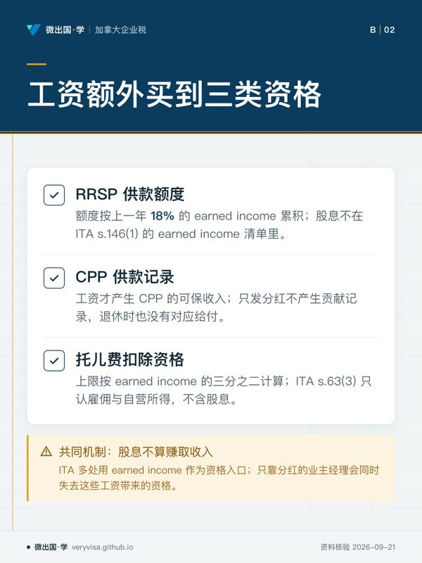
- 先看先看三个结果分别对应储蓄空间、退休记录和托儿扣除。
- 易漏现金进到个人手里，不代表会生成这些税务或社保资格。
- 下一步去练习，把自己的取款方式代入三项资格逐项核对。
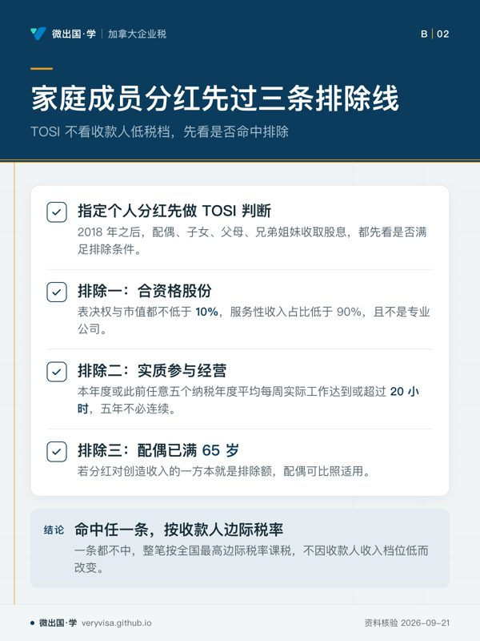
- 先看按股份、参与经营、配偶年龄三个入口顺序检查。
- 易漏不是只有未成年人需要判断，成年家属也在范围内。
- 下一步去练习，逐项记录家属持股、工时和配偶年龄。
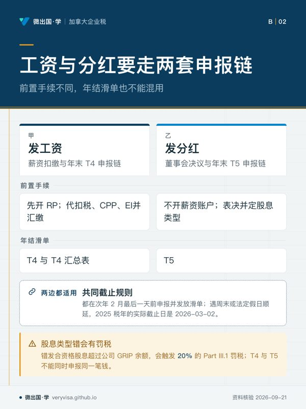
- 先看先看两栏分别要建立什么程序，再看年结报哪种滑单。
- 易漏两条路线虽然同日到期，但只有股息还要核对公司可发类型。
- 下一步去练习，把一次实际付款归到正确申报路线。
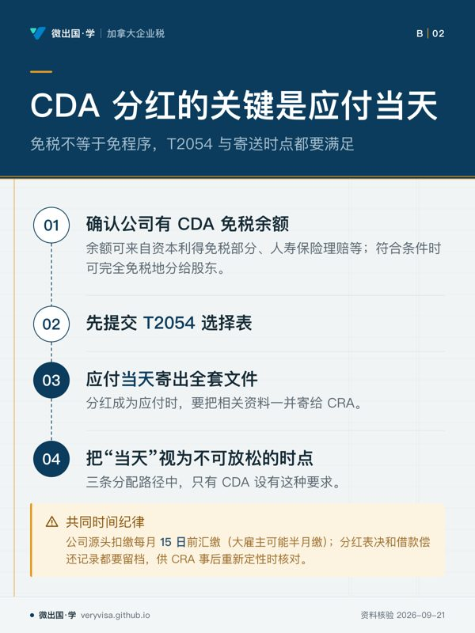
- 先看先按资格、选择、递交三个动作顺序看，不要只看免税结果。
- 易漏这条路线对文件递交时点更苛刻，记录不足也会影响事后定性。
- 下一步去知识卡，用公司档案核对余额来源与留存记录。
注册不注册：递延只在利润留在公司里那几年成立

- 先看先看中间的毛额化与抵免，理解两项机制怎样处理公司已交过的税。
- 易漏两类股息参数不同；高税率对应更高抵免，但现实仍有税负差异。
- 下一步去练习判断一笔股息先后经过哪两个机制。

- 先看先看「交税」这一行，再看递延价值如何随利润取出而变化。
- 易漏图比较的是资金停留与取用两个状态，不代表永久减少税款。
- 下一步去练习判断你的利润会留在公司还是拿回家花掉。

- 先看先找责任触发条件，再核对抗辩和时效，这三处决定董事责任范围。
- 易漏夫妻店里，是否实际管钱不是唯一判断；挂名董事同样可能承担责任。
- 下一步去练习判断一个董事是否落入这项税法例外。
被动收入：AII 与 AAII 是两个口径，取错数不会有提示
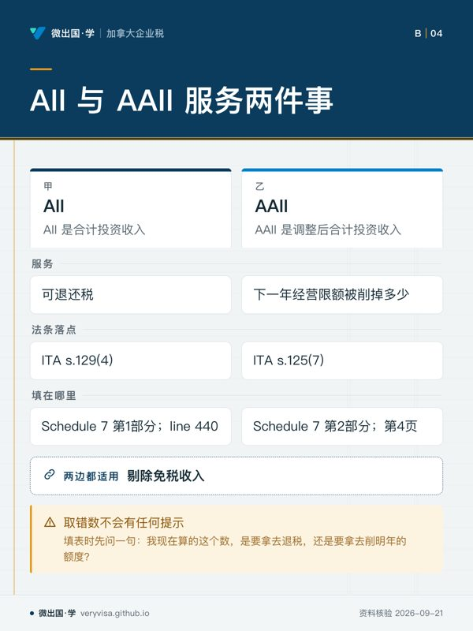
- 先看先看「服务」这一行，判断手里的数字准备拿去做哪件事。
- 易漏最容易错的是两个口径在同一张附表上并排，差别常常只有几万块。
- 下一步去练习，先按用途选口径，再核对填写位置。
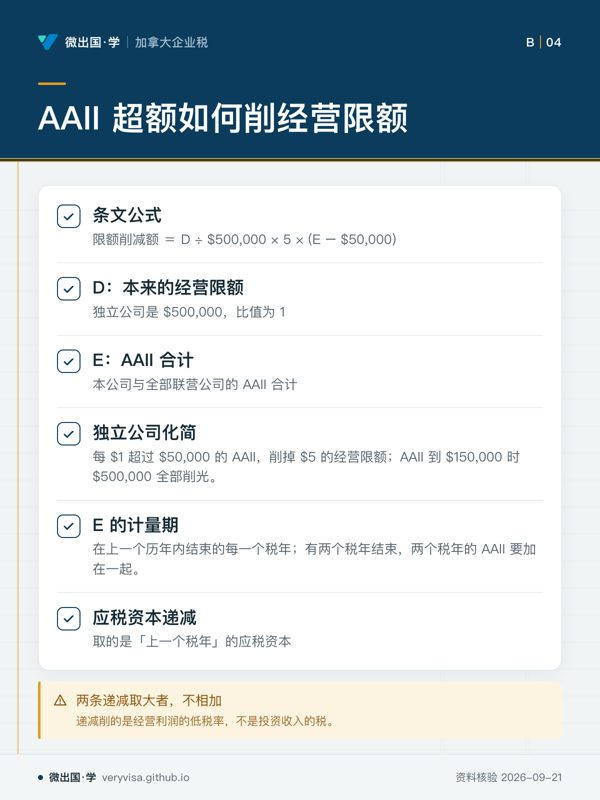
- 先看先看 D 和 E：一个是限额基数，一个是联营后的收入口径。
- 易漏年结日变更时，历年内可能收进不止一个税年；这是最容易数错的地方。
- 下一步去练习，专做年结日变过时的取数判断。
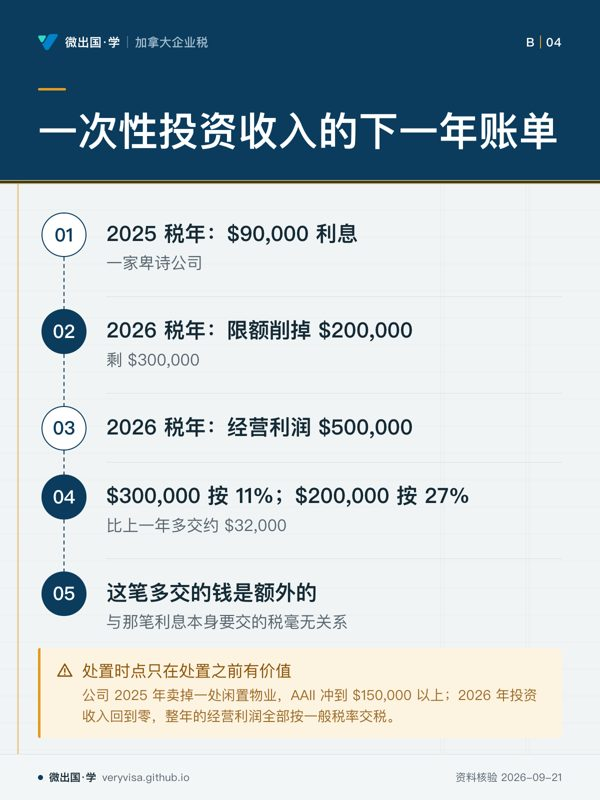
- 先看先顺年份读每一步，留意经营限额和经营利润是在不同税年发生。
- 易漏等 2027 年额度恢复，钱已经交出去了；图里只画到下一年。
- 下一步去练习，用一笔大额资本利得推演后续低税额度。
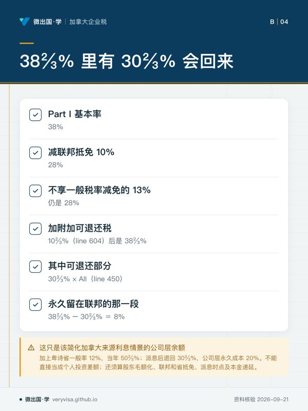
- 先看先看 28% 为什么没有再减，再看可退还部分从总税率里分出去。
- 易漏图只拆公司层；个人那一层的股息税还在后面。
- 下一步去讲解，把「投多久」和「哪一类投资收入」带进完整算式。
股东贷款：计的是本金，死线先问公司年结日

- 先看先抓避税路径，再看法律为什么把取出的本金当期纳入。
- 易漏法定例外不止两项，经营者常碰到的主要集中在两类。
- 下一步去练习，用一笔公司借款判断是否先落入收入规则。

- 先看先比较两个示例的起算结构，不要从拿钱那天顺推。
- 易漏账面清零后很快借回，仍可能被视作同一套循环安排。
- 下一步去练习，给定公司年结日后自己推出最后还款日。

- 先看先把用途清单与资格门槛分开读，再看两项前置是否同时成立。
- 易漏高持股员工会卡在人员定义；住房用途还取决于真实居住事实。
- 下一步去知识卡，把自己的用途、持股比例和还款文件逐项对照。

- 先看按工作顺序读：先把往来记全，再判断、计息，最后归入申报凭证。
- 易漏个人侧能否扣回取决于历史处理，不取决于今天是否已经还钱。
- 下一步去练习，用一份往来记录把每笔款项分到对应申报位置。
雇员还是自雇：CRA 只看经济实质，换个外壳不改变它

- 先看先分四个观察面：谁指挥、谁出生产资料、谁担经营结果、工作如何嵌入业务。
- 易漏签了“独立承包商”也不能锁定身份；单个有利事实同样不够。
- 下一步去知识卡逐项写下实际安排；有争议时带事实记录问持牌专业人士。

- 先看从风险传导看：先回头补历史款项，再看设公司是否真的改变税务结果。
- 易漏即使双方当时都认可承包安排，之后仍可能被重新定性。
- 下一步去讲解核对设公司是否真改身份；争议时带合同和工作事实问持牌专业人士。

- 先看先问钱为什么花，再辨是不是长期资产，最后检验金额有没有超出常情。
- 易漏与业务有关只过了第一关；耐用设备与日常耗材的税务处理并不相同。
- 下一步去练习，逐笔按三关勾选；边界项目带发票与用途说明问持牌专业人士。

- 先看先分清两件事：账簿可以按替代周期走，但个人申报的计税年度没有跟着变。
- 易漏例外并非让收入永久挪到别的年度；它要求持续做调节并在后续校正。
- 下一步去知识卡核对首年与后续换算；采用例外前带账期安排问持牌专业人士。
GST/HST：30,000 元门槛按人算不按生意算，两条触发路径

- 先看先比身份何时终止，再看是否能等到月末。
- 易漏临界交易可能立刻改变收税义务，不能等季度收尾。
- 下一步去练习，用两种跨线情形各判一次注册起点。

- 先看先把收入来源归到同一个经营者，再决定哪些项目计入总额。
- 易漏结算单到账额已扣佣金，不能拿它直接替代成交价。
- 下一步去练习，把多业务与平台销售各做一次归集判断。

- 先看先找交易落在哪个法域组，再辨认是合并税还是两税并列。
- 易漏新斯科舍这次是下调；含税倒算从 15/115 变成 14/114。
- 下一步去练习，给跨省送货和到店自提各判一次落档。

- 先看先比较采购强度与临界区间，再看业务是否高度依赖进项抵扣。
- 易漏转包多会放大常规法的抵扣价值；被排除行业没有选择资格。
- 下一步去练习，用自己的采购结构重算两种方法。
应税福利：雇员身份与股东身份是两条路，走错后果全变
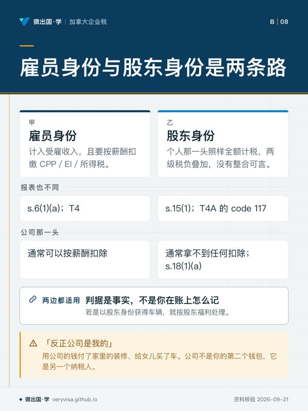
- 先看先比企业一侧能否扣，再看报表去向；这两处最能区分处理路径。
- 易漏同一人可兼具两种身份；获得好处时的实际事实才决定归类，账务写法不能改结果。
- 下一步去练习，用车辆情形检验自己能否分清两条路径。
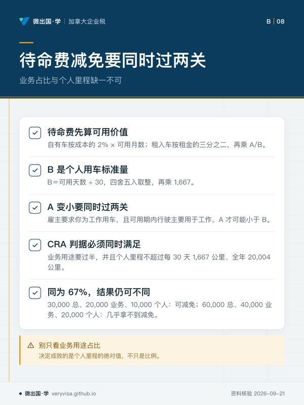
- 先看先找公式中会缩小福利金额的那个分子。
- 易漏工作用途占多数仍不够，私人驾驶量过高也会卡住减免。
- 下一步去练习，把占比门槛和私人驾驶量分开检验。
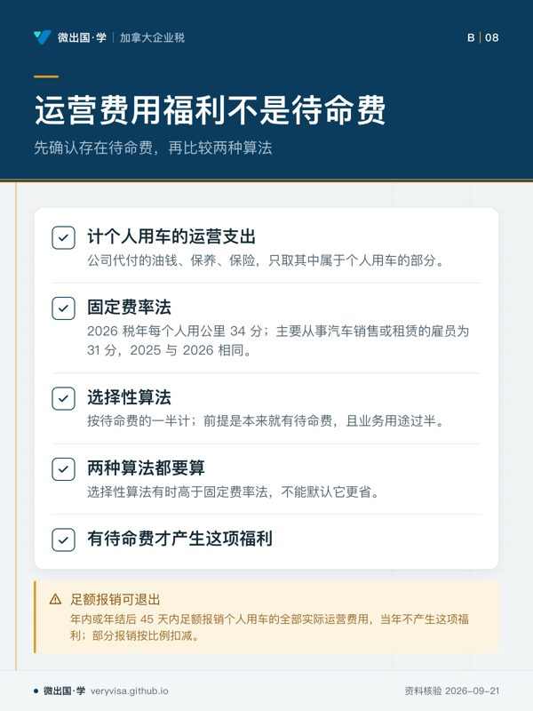
- 先看先看哪些日常用车成本由公司代付，再比较计价方法。
- 易漏第二种算法不是优惠保证，结果可能反而更高。
- 下一步去练习，用同一组驾驶数据分别算出两个金额。
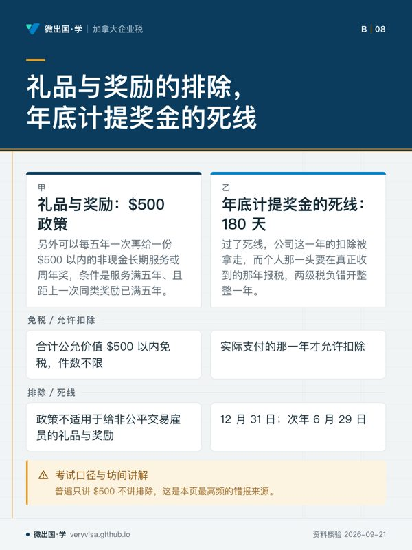
- 先看先看右栏的付款时点：它决定费用落在哪个年度。
- 易漏左边的友好待遇并非老板自用额度；右边也不能靠账面计提把扣除留在原年度。
- 下一步去练习，把身份关系和实际付款日分别标出来再判断。
家庭办公室：两道门二选一，判据不是你在家待了多久
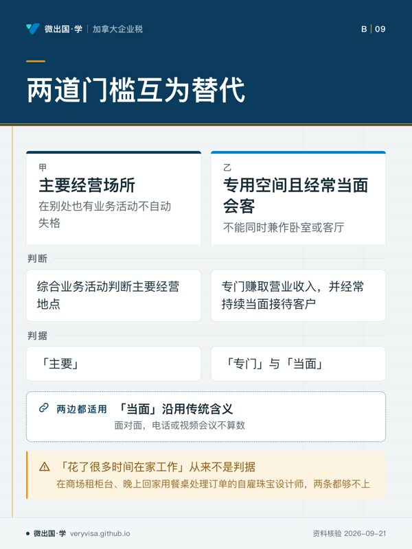
- 先看先核两条资格路径，再看「主要」和「专门」。
- 易漏常年靠 Zoom 见客户不需要靠第二条；另有办公室、偶尔在家视频见客户，两条都够不上。
- 下一步确认主要经营地点，核实是否当面接待客户。
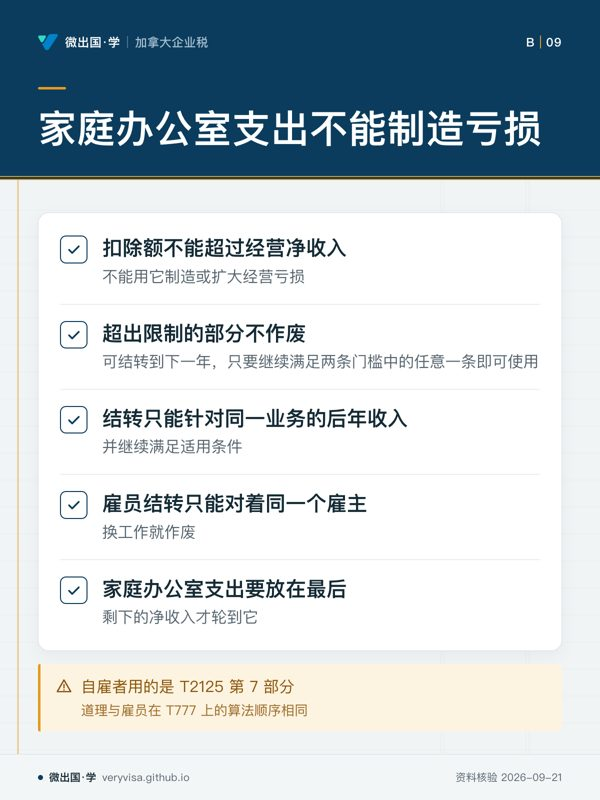
- 先看先看申报这些支出之前的经营净收入。
- 易漏这与雇员规则不同：自雇者没有「换雇主」这回事。
- 下一步先算完车辆费用与其他经营费用，再轮到家庭办公室。
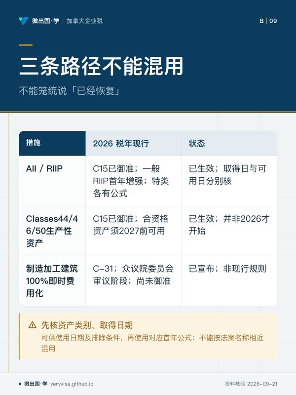
- 先看先看制造建筑提案；前两项已实施。
- 易漏2024-04-16起取得且2027前可用的合资格资产，后来追溯立法。
- 下一步追踪C31，再核资产类别与排除条件。
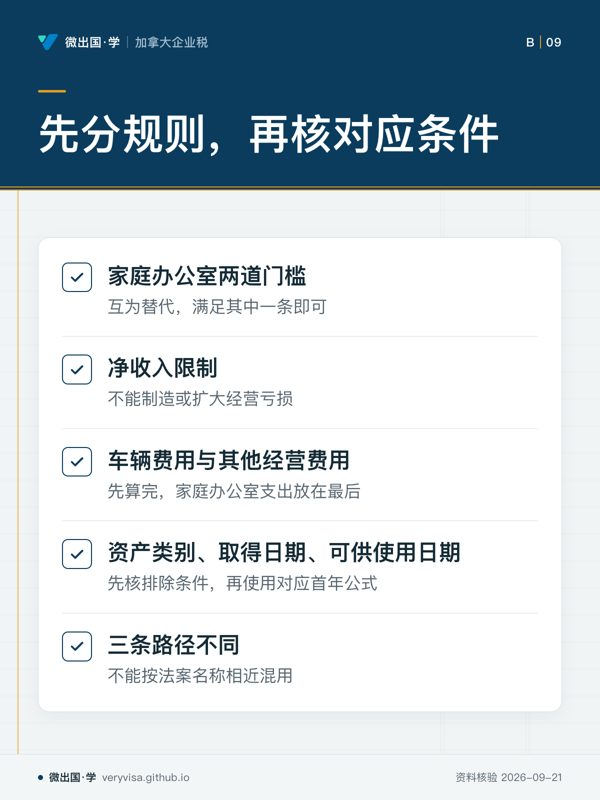
- 先看先看剩下的净收入，再看特类各有公式。
- 易漏一门本来就极少需要见面、或见面时间毫无规律的生意，天然很难满足第二条。
- 下一步先算完其他经营费用，再核取得日与可用日。
零工平台：网约车没有门槛，而平台已经在替你报数
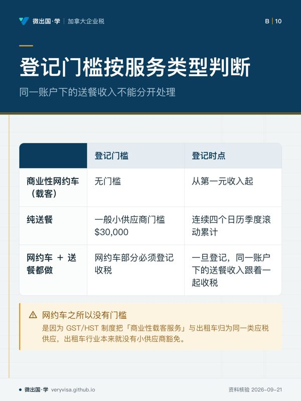
- 先看先比前两行，再看第三行怎样联动。
- 易漏真正的考点在门槛的触发路径；单季触发没有缓冲期。
- 下一步去练习，专门分辨单季触发和四季累计触发。
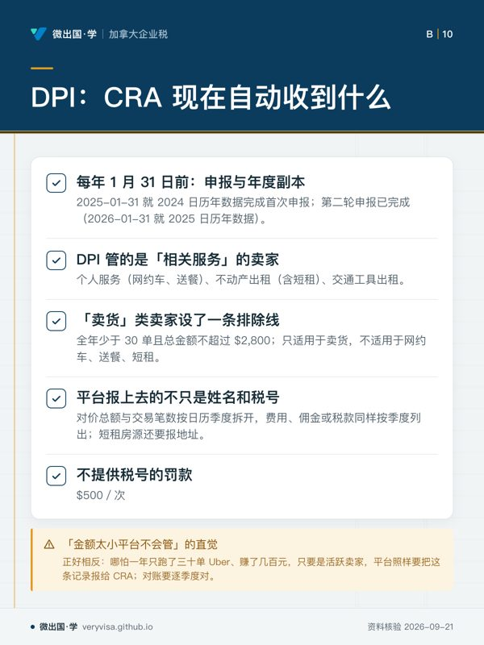
- 先看先看排除线那一项，因为最容易误套范围。
- 易漏别把低金额当成不会申报；关键还要看卖家类型。
- 下一步去练习，用年度副本和台账逐季核对。
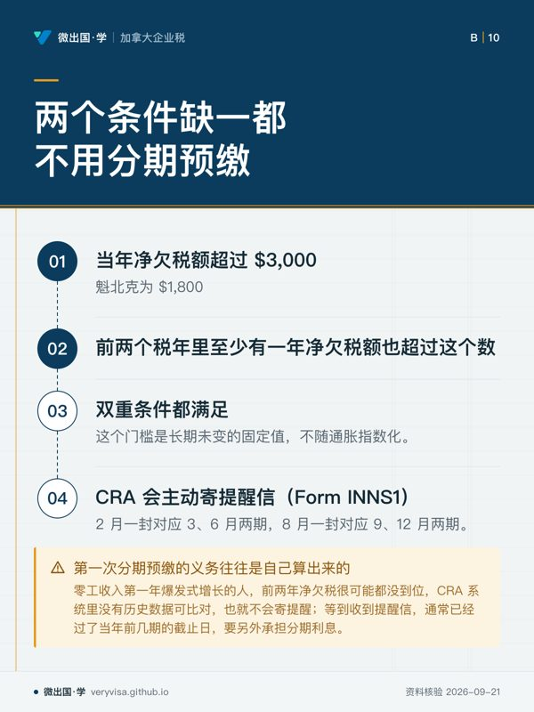
- 先看先看前两步，它们是并列的两道门槛。
- 易漏别把提醒信当成义务起点；第一年收入猛增时容易错过前几期截止日。
- 下一步去练习，自己用净欠税额跑一遍判断。
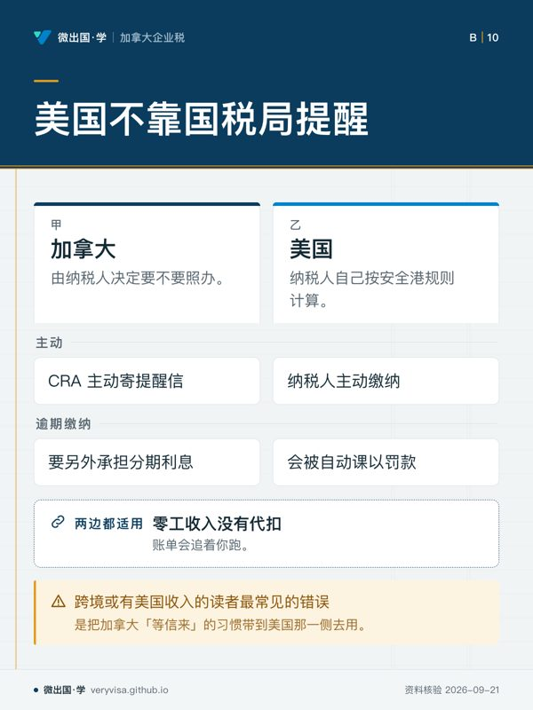
- 先看先看第一行，重点是由哪一边先发起动作。
- 易漏别只盯提醒方式，逾期后的处理也不一样。
- 下一步去练习，分别判断主动方和逾期后果。
非营利组织：四个要件逐年判，T1044 的棘轮只进不出
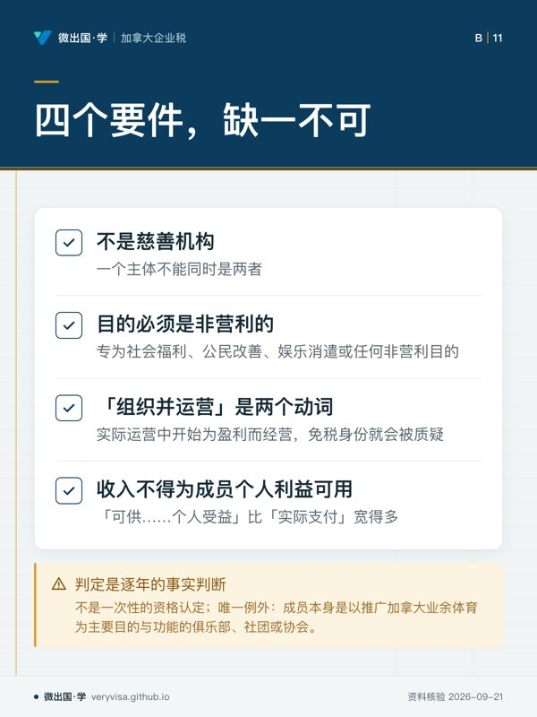
- 先看先盯第三项：文件写法与现实经营要分别检查。
- 易漏第一项是排他关系，不是把慈善机构和非营利组织并列处理。
- 下一步去练习拿一个组织的章程与实际活动逐项验四个条件。
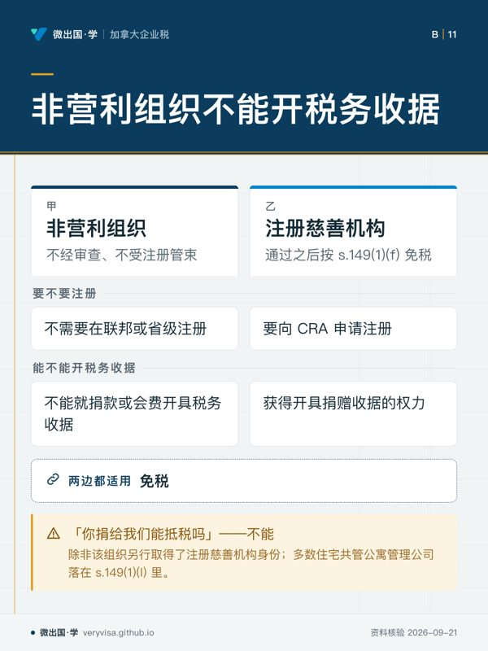
- 先看先看收据这一行；组织自身的税务待遇和捐赠人的利益要拆开。
- 易漏共管公寓管理公司这里只说「多数」，因为它们通常为非营利目的运营。
- 下一步去练习把注册、免税和收据权限拆开判断。
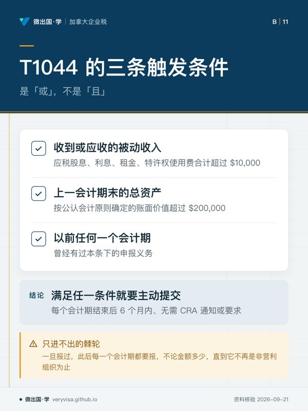
- 先看先分清时间口径：一条看本期，一条回看上期期末。
- 易漏适用对象限于因 s.149(1)(e) 或 s.149(1)(l) 而免税的主体。
- 下一步去练习按三条路径逐项判断，避免把择一误成同时满足。
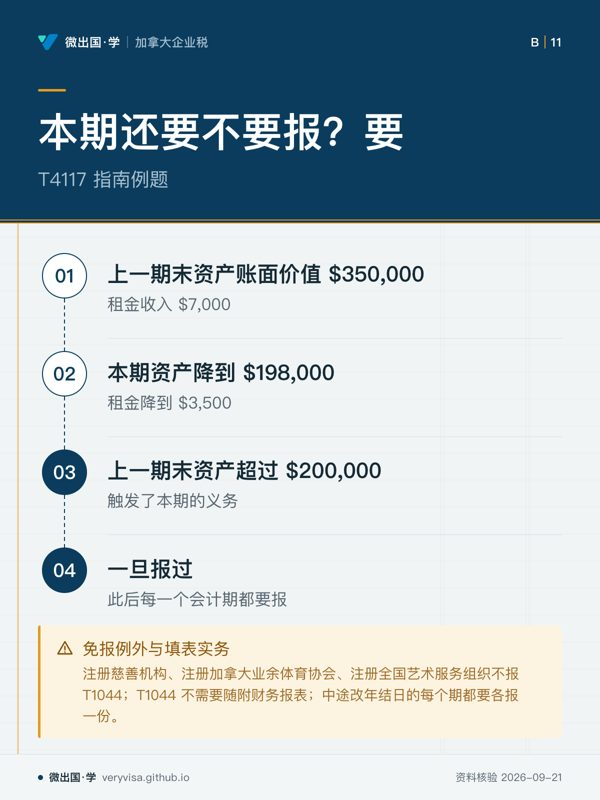
- 先看先读第三步，再回看前两步；关键在上一期末的触发时点。
- 易漏仅为向长者提供低成本住房而运营、且收入不供任何业主成员股东个人受益的公司也不报。
- 下一步去练习用前一期资产判断下一期是否进入持续申报状态。
GIFI 与 Schedule 1：慈善捐赠在两页上出现两次，方向相反

- 先看先看三类勾稽，再查各项目能否让系统完成验算。
- 易漏公司与合伙企业的权益项目并非同一编码。
- 下一步去练习，用一份试算表逐项对勾。

- 先看先分常规附表、首年追加与可替代的纸表。
- 易漏纸质简表的两个规模条件必须同时满足。
- 下一步去练习，判断你的申报组合该带哪些表。

- 先看按财报起点、加项、减项、兜底栏位的顺序看。
- 易漏捐赠是顺序差异，不要把先加回理解成永远不能扣。
- 下一步去练习，拿一笔账税差异判断加还是减。

- 先看先找永久不能扣的项目，再看只是改变扣除顺序的项目。
- 易漏短租规则有起算日，餐费另有特定从业者例外。
- 下一步去练习，按总账科目判断是否需要税会调整。
CCA 类别地图：先让事实通过定义，再让规则决定金额
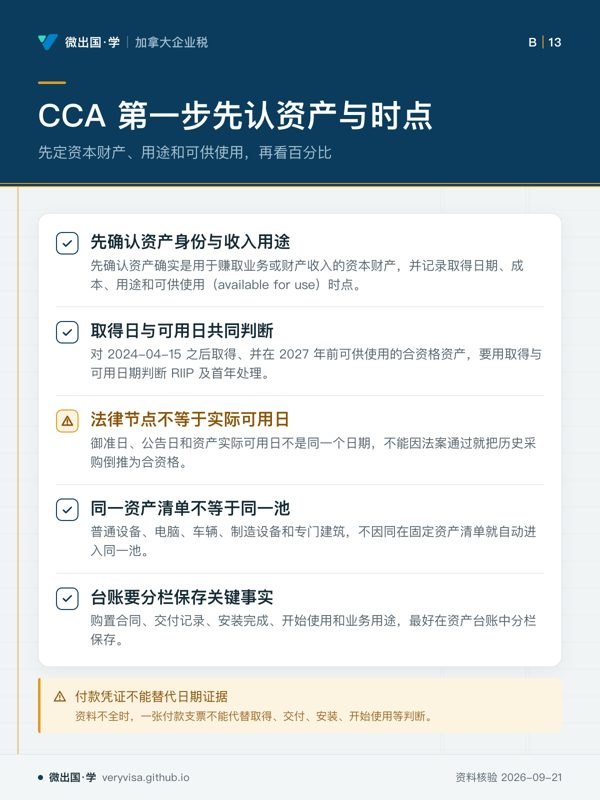
- 先看阅读顺序：先看资格入口与时间证据，比例信息最后处理。
- 易漏法律程序上的节点，不能替代设备真实投入运作的日期。
- 下一步去知识卡核台账栏位；证据矛盾时带原始凭证问持牌专业人士。
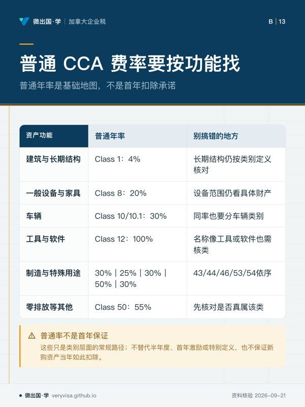
- 先看先从用途分组入手，再横看费率与边界提醒。
- 易漏只背一串比例会掩盖归类思路，先问财产是拿来做什么。
- 下一步去练习把采购重新归组；难判类别时带发票问持牌专业人士。
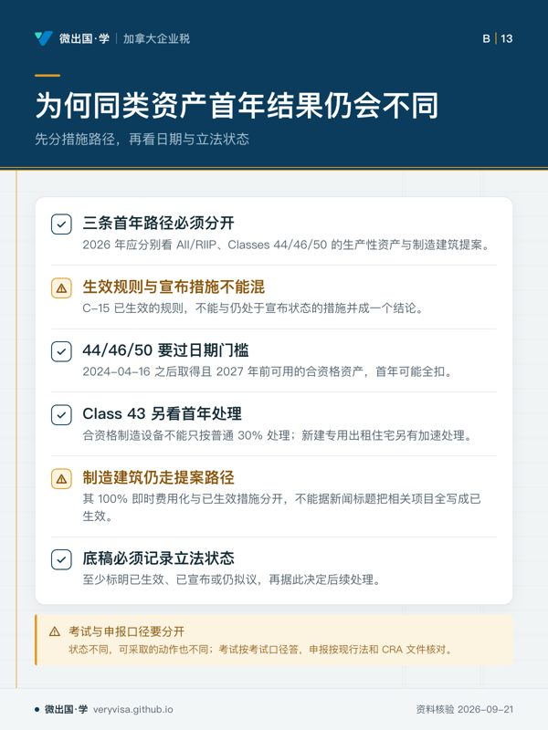
- 先看先辨认优惠来源，再检查它是否已经进入可执行规则。
- 易漏政策新闻的发布层级，可能和报税时能否直接采用不是一回事。
- 下一步去讲解做路径分流；申报前带购置资料问持牌专业人士。
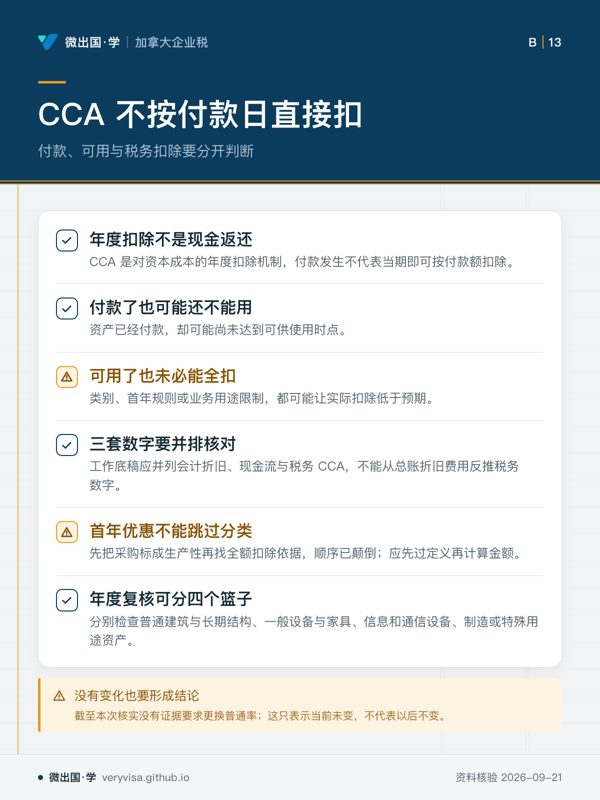
- 先看先分开资金流、启用事实和报税处理，不要把三者绑在同一天。
- 易漏账面费用只是财务记录，不能单独推出资本成本的税务结果。
- 下一步去练习重排采购项目；用途比例有争议时问持牌专业人士。
公司老板与自雇 CPP：两层上限为什么不能直接相加套用
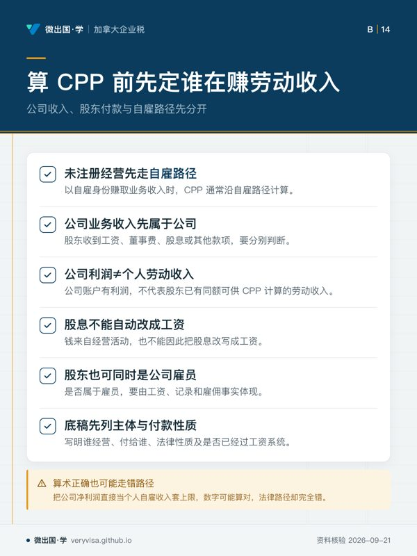
- 先看阅读时先追资金和文件证据的去向，不要看到经营现金就先算供款。
- 易漏实际是未注册自雇却只按股东分红处理，会漏掉自雇供款判断。
- 下一步去练习：拿一张付款凭证，写出收款方与款项依据。
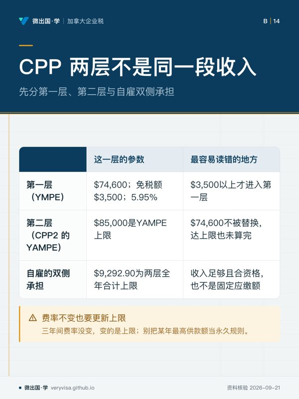
- 先看先横看三行机制，再用右栏排除错误读法。
- 易漏双侧承担说的是供款责任，不是把公司利润算进个人收入。
- 下一步去知识卡：换一个税年，重新核两层边界。
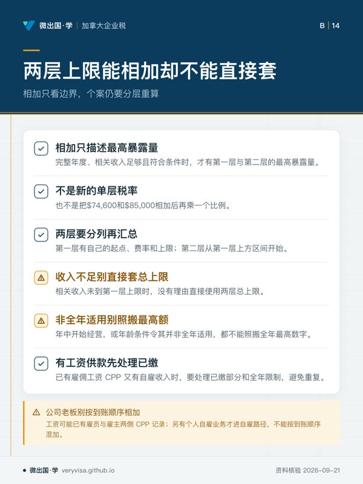
- 先看读卡时先找适用门槛，再看哪些情形必须重新核算。
- 易漏最危险的不是四舍五入，而是把不同路径各自算到顶。
- 下一步去练习：用工资加自雇的混合案例复核。
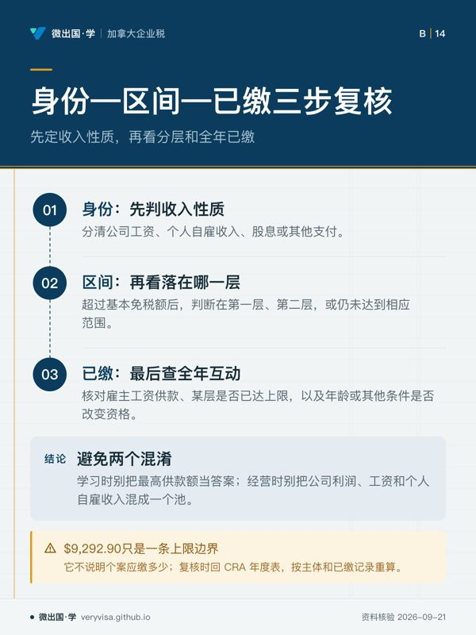
- 先看先从付款类型入手，再核分层与既有记录，别从最终金额倒推。
- 易漏同一年里已有工资扣缴时，后面的自雇计算不能另起一套全年额度。
- 下一步去练习：拿混合收入案例走完三步。
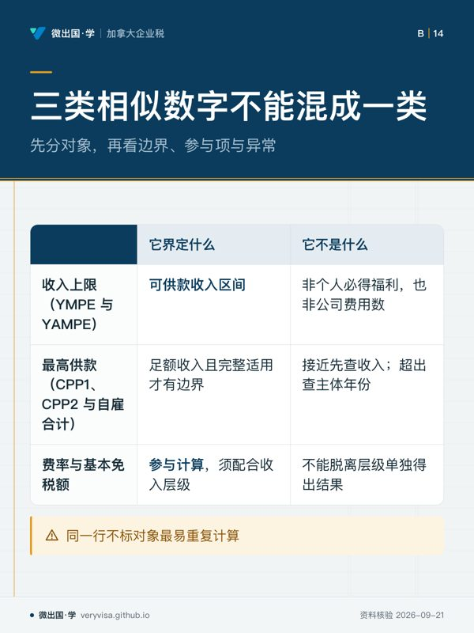
- 先看先看三行各自回答哪一种数字问题，再比较左右两栏。
- 易漏费率不变也要重核上限，本页数字只是核实日快照。
- 下一步去练习：见到上限数字先标对象和税年。
公司车辆与 CCA：乘用车上限、租赁、利息和员工用车福利

- 先看阅读顺序：先辨法定归类依据，再看购入时点。
- 易漏业务用途要由里程日志、行程目的、客户地点和公司政策支持。
- 下一步去练习；问持牌专业人士应采用哪项法规口径。

- 先看购入还要拆开 GST/HST、补贴、以旧换新和私人用途调整。
- 易漏零排放车不能凭广告直接选 Class 54；短租、跨税年、提前终止或换车会改期间与调整项。
- 下一步去练习；问持牌专业人士合同应套哪套限额公式。

- 先看先判所在区域，再把合资格公务里程按年度汇总。
- 易漏员工当年在另一雇主处已使用的公里区间，完全忽略也会使判断失真。
- 下一步去练习；问持牌专业人士混合报销如何划边界。

- 先看先看左右两栏各自在核算谁，别用一侧金额推另一侧。
- 易漏周末、家庭成员和休假期间用车，也应按公司政策记录。
- 下一步去练习；问持牌专业人士雇主行业属性如何改变福利参数。
公司发薪的年度参数：CPP、EI、QPP 与雇佣收入边界
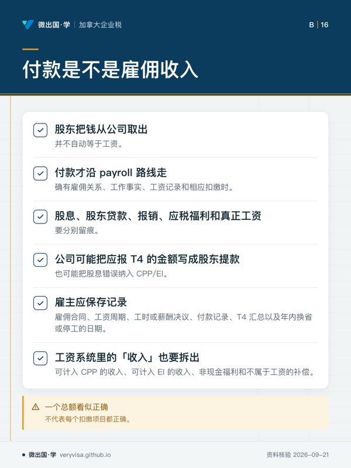
- 先看先看第二项的成立条件：它决定付款是否进入工资流程。
- 易漏股东身份和付款性质是两层判断；股东取款本身不能替代雇佣事实。
- 下一步到练习逐笔判断，再把灰区带给持牌专业人士核对。
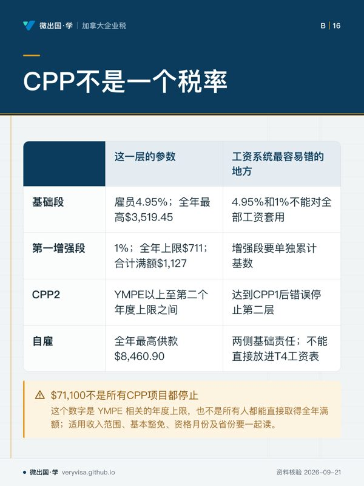
- 先看先看CPP2那一行：它最能暴露只有一个「已满」开关的系统问题。
- 易漏年中开始工作、离开加拿大、年龄或其他资格因素变化时，要按适用月份和当年表格调整。
- 下一步到讲解核对每层累计基数，再把身份边界问题交给持牌专业人士。
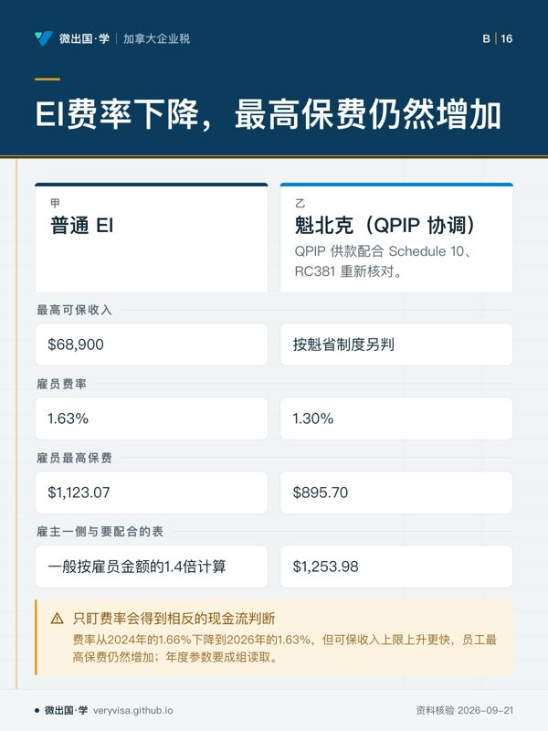
- 先看先从两栏的最高保费入手，再回头看费率为什么会给出相反方向。
- 易漏不能把年末地址当成全年工作地，要按工资发生期间建期间表。
- 下一步到讲解核对跨省期间表，再把省份边界问题带给持牌专业人士。
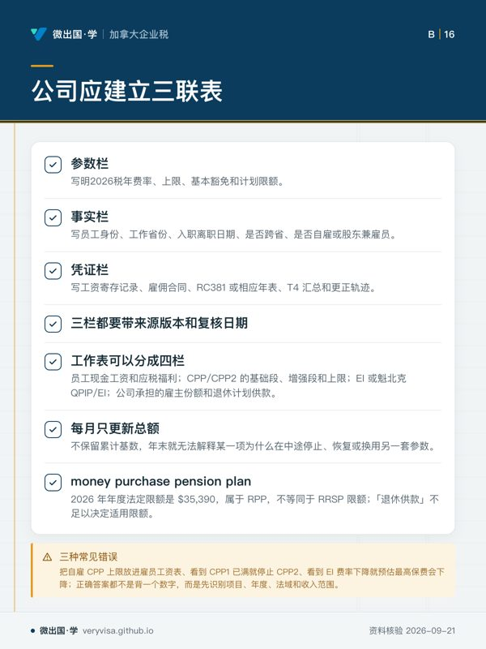
- 先看先盯三栏之间的分工：数字、人员情况、证明材料不要混在一起。
- 易漏退休计划限额取决于计划类型；只写「退休供款」不足以判断。
- 下一步到练习按三联表补一份样例，再把边界情况交给持牌专业人士。
公司经营者身故后的税务与资产交接：CPP、QPP、住宅权益和遗产费用

- 先看先看 QPP 那格，避免把另一套制度直接套过来。
- 易漏指定受益人与付给遗产的流程也可能不同，金额相同也不代表路径相同。
- 下一步去练习，拿一宗案例先判付款人，再判申请路径。

- 先看先看资产那一行，这里最能防止把两种所有权混在一起。
- 易漏死者个人出租给公司的物业、车辆或工具，另行核对租赁等安排。
- 下一步去练习，逐项判断谁持有、谁能操作、谁要先取得授权。

- 先看先看认证费那格，别把管理成本当成一档统一费率。
- 易漏转移给配偶或成年子女的安排，还要留下法律文件和评估依据。
- 下一步去练习，把住宅权益和认证费用分成两道判断。

- 先看先沿日期顺序看资金何时可能卡住，再看结论条。
- 易漏本页金额只是当前核实快照，下一年度不能沿用。
- 下一步去练习，把发薪、申报和解冻节点放进同一条时间线。
收到 CRA 复评之后：时效、VDP、亏损决定与争议路径
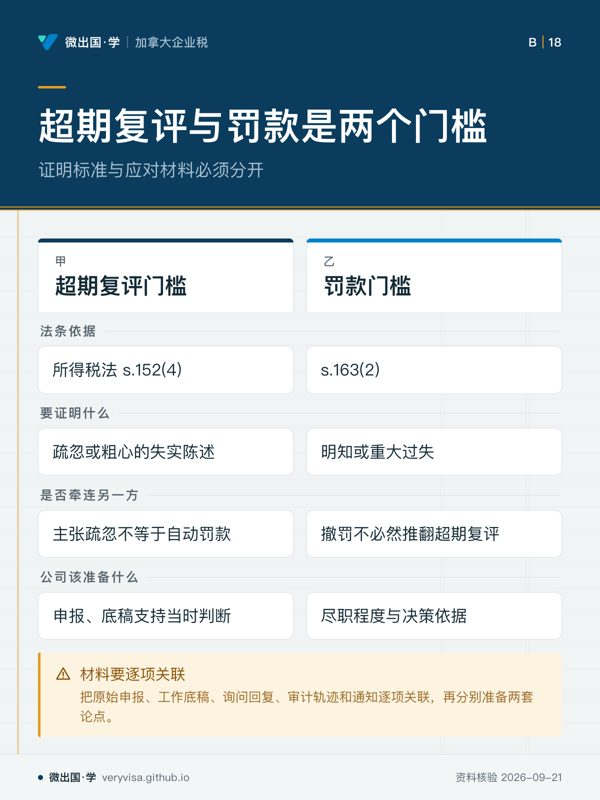
- 先看先比较两种证明标准，再看为什么一种结果不能替代另一种判断。
- 易漏通知日以正式文件和账户记录核对，不能用会计师转发邮件日期代替。
- 下一步去讲义整理证据链，带两套论点找持牌专业人士核对。
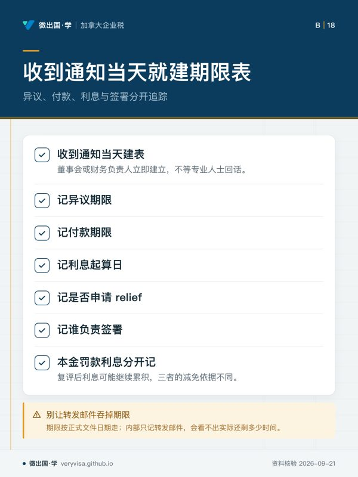
- 先看先确认责任人和关键时点，再检查每个动作是否已经落到登记里。
- 易漏减免要分项申请，不是一次性求情。
- 下一步去路线核对后续动作，带正式通知找持牌专业人士确认期限。
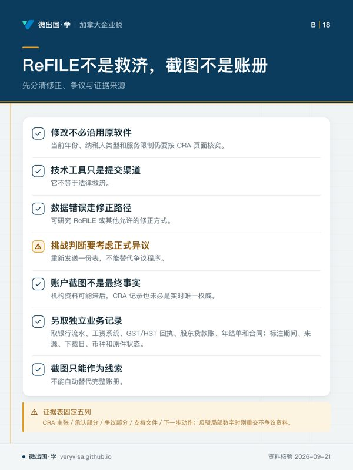
- 先看先辨别是在改数据、挑战判断，还是补证据，三类动作不要混在一起。
- 易漏服务可用性仍要按当年、纳税人类型和限制核实。
- 下一步去知识卡整理证据来源，带争议点找持牌专业人士判断路径。
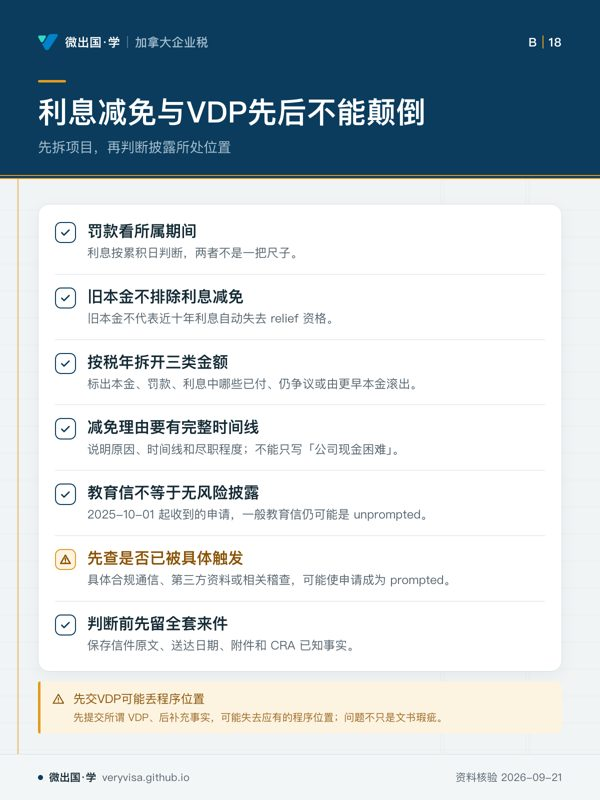
- 先看先把金额和来件背景分开整理，再判断减免申请与自愿披露的顺序。
- 易漏教育信不一定安全；关键还要看 CRA 当时已经掌握什么。
- 下一步去讲解核对来件背景，带完整通信记录找持牌专业人士判断。
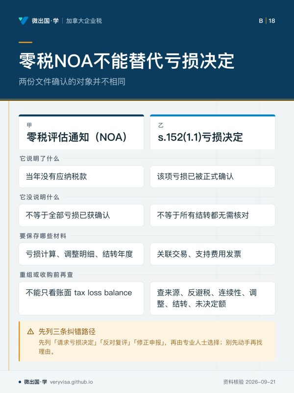
- 先看先看两份文件各自确认什么，再检查交易前还缺哪些历史核对。
- 易漏交易前还要查历史调整和业务连续性，不能只读账面余额。
- 下一步去路线列出纠错选项，带亏损明细找持牌专业人士选择。
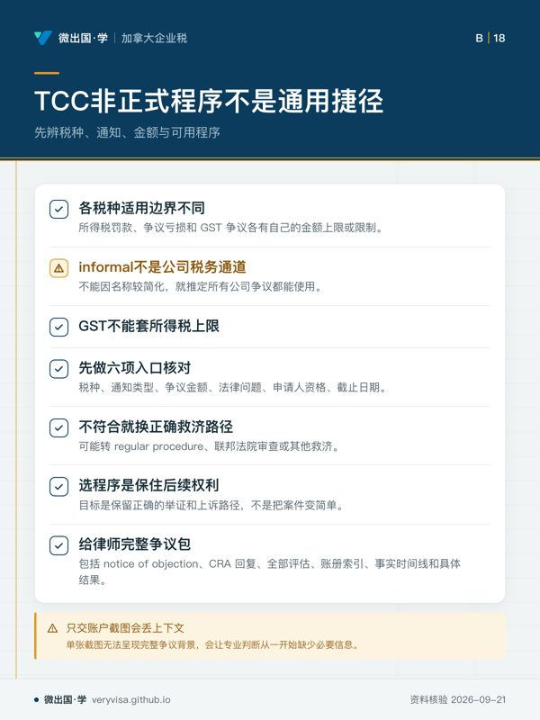
- 先看先确认案件属于哪类争议，再看通知、金额、资格和法律问题会把程序引向哪里。
- 易漏金额只是入口之一；通知类型、资格和争议性质也会改变路径。
- 下一步去路线整理争议包，带全部评估和时间线找持牌专业人士。
公司分配与跨境股东：加拿大股息抵免、两层判断、78 加计与 960(d)

- 先看先从收款人往回看：身份不同，检查路线也不同。
- 易漏同一银行账户不能替代分配性质、决议和账簿的判断。
- 下一步去练习，按收款人身份逐项判断公司端和股东端。

- 先看先对照例子的两个应税金额，确认计算结构不是同一路径。
- 易漏不能用「利润来自主动经营，所以所有股息都是合资格」作为结论；会计利润、现金余额和合资格股息池是三件不同的事。
- 下一步去练习，拿付款事实反查股息类别和计算结构。

- 先看先看两行「不等于」：不能把一端工作替代另一端。
- 易漏若股东链中有另一家外国公司，不能只凭第一层股东名称判断最终控制关系。
- 下一步去练习，沿股东链逐层核对付款和抵免资料。

- 先看先看加计列和抵免列：两种处理不要放进同一列。
- 易漏TKU-0795 记录的是容易被压缩错的美国计算边界，不能把两种处理合并理解。
- 下一步去练习，先按税款来源和对应收入分列，再检查限额。

- 先看先从并入税年判断过渡适用，再去看外国税。
- 易漏法源标注要保留「拟议」状态；依赖公告不等于已经有最终条例。
- 下一步去讲解，带着并入年度、付款年度和适用税年逐项核对。
公司股东的美国业务边界：QBI 递减、Section 179、退休计划与身份测试
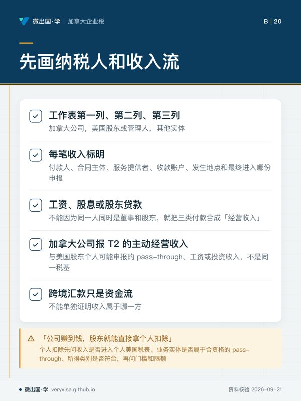
- 先看美国端的业务扣除通常要回到美国税法下的收入和纳税人。
- 易漏公司账上的净利润不是个人自动拥有的 QBI 或 Section 179 基础。
- 下一步去讲解核对 T2 与美国个人表的税基。
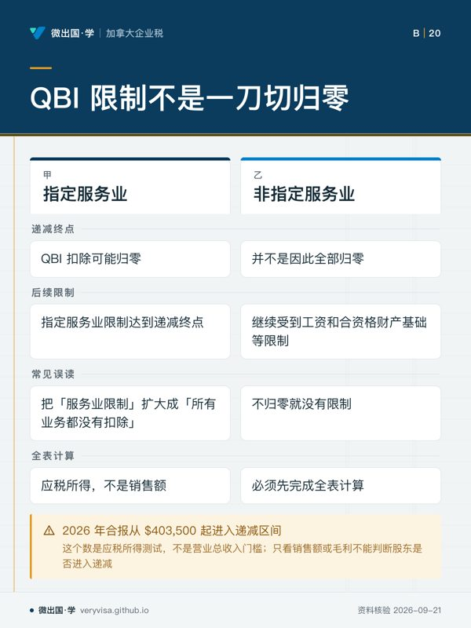
- 先看先看第一行的区分，再看两类限制。
- 易漏夫妻合报、分开申报和其他身份不能共用一列；工作底稿要注明 2026 税年和申报身份。
- 下一步去练习完成资本利得、扣除和其他收入的全表计算。
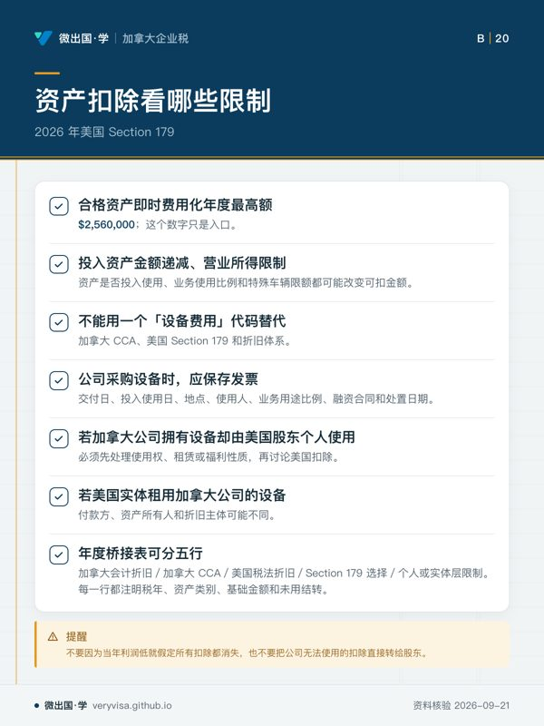
- 先看先问收入是否进入个人美国税表，再问业务实体。
- 易漏加拿大公司报 T2 的主动经营收入，与美国股东个人可能申报的收入，不是同一税基。
- 下一步去讲义核对付款人、合同主体和最终进入哪份申报。
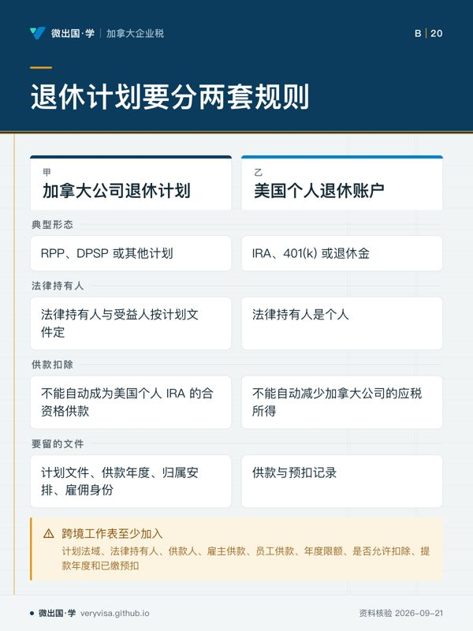
- 先看先看供款由哪一边支付，再看能否影响另一边应税所得。
- 易漏股东同时是雇员和董事时，年末把转账重新标成「退休供款」会造成 T4、T5、美国工资或个人退休表不一致。
- 下一步去讲义核对董事会决议与工资记录。
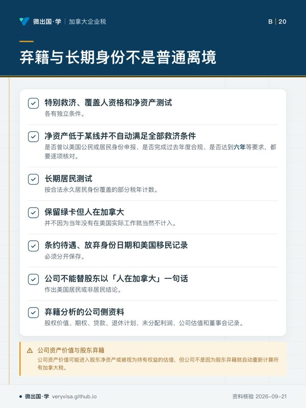
- 先看先看「人在加拿大」，再看公司与股东。
- 易漏若股东年内成为或失去美国税务身份，还要把身份变化日期与所得期间分开记录。
- 下一步去讲义核对条约待遇和放弃身份日期。
公司薪酬政策：退休计划限额、技工流动扣除、雇佣收入入口与证券期权

- 先看先看第三格，再回到前两格检查对象、利益和时点有没有混在一起。
- 易漏小公司里三种身份常落在同一人身上；若文件不清，工资、股息、贷款和福利容易在账上互相改名。
- 下一步去练习，用同一笔付款跑完四问；身份交叉时带给持牌专业人士。

- 先看先看计划参数那格，再读确认顺序；重点是先分清是哪一类安排。
- 易漏最容易读错的是把法定参数当成员工人人可用的额度；实际还要回到具体计划。
- 下一步去练习，把一笔退休支付按计划类型、入账和凭证逐项核对。

- 先看先看差额测试，再用案例确认自己比较的是两段到工地的路线。
- 易漏一笔费用若个人扣除、另一笔又由公司全额报销，要明确是否重复受益、报销是否应计入员工收入。
- 下一步去练习，按案例自己重做一遍判断；疑难报销交持牌专业人士。

- 先看先横看前两行，先判断收入性质，再看申报入口和公司留存。
- 易漏员工最终要在 T1 上处理某项收入，不等于公司端无需保存付款性质。
- 下一步去练习，拿一笔没有标准凭证的付款判断它应归哪类收入。

- 先看先看归入年度的计算依据，别先从行权时点倒推。
- 易漏非 CCPC 与 CCPC 的处理不要混写；股份条件、雇员与公司关系、期权协议和收购日期都可能改变结果。
- 下一步去练习，用一份期权协议标出授予、可行权和收购日期。
经营者财务压力：消费提案门槛、注册供款窗口、税债优先级与三步交接
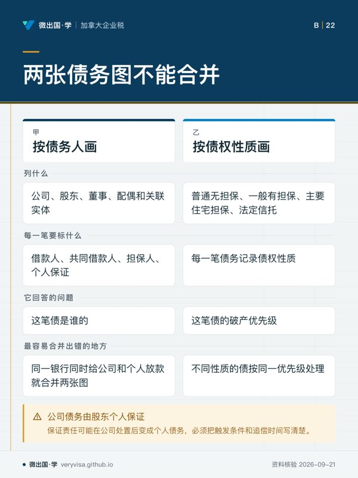
- 先看先看两栏各自回答哪类判断，先分清归属再看程序位置。
- 易漏消费提案另看合计债务测试，债权分类不能直接替代门槛计算。
- 下一步去练习，用公司和个人同时出现的案例做拆分。
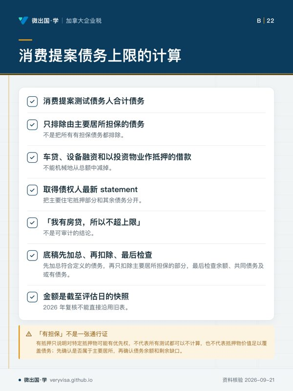
- 先看先看计算次序，减项边界最容易被做宽。
- 易漏公司债若由股东个人保证，后续可能进入个人债务层面。
- 下一步去练习，按债权人资料重做一遍计算。
- 先看先看带时间窗口的注册计划项目，它会改变后续处理范围。
- 易漏工具还要核对谁使用、收入归谁、是否计入公司资产以及是否有融资。
- 下一步去练习，拿资产清单逐项补所有权、使用和融资。
- 先看先看工资相关那一行，最容易发现把税项混成一种的错误。
- 易漏程序开始后才补做的分类，往往已经错过保留文件或提出异议的时点。
- 下一步去讲义，带原始申报和付款历史核对适用条文。
- 先看先看第一步，后面的判断都依赖完整记录。
- 易漏完整流水应交给专业人士，不能只留下对公司有利的摘要。
- 下一步去练习，把已发生动作按时点排成一条线。
- 先看先看与记录完整性有关的两问，它们影响后续核对能否落到事实。
- 易漏考试口径还不够，实务要再加所有权、担保文件和评估通知；简化数字不能替代 2026 年最新金额。
- 下一步去讲义，带所有「是」的材料检查还缺什么。
公司资产：CCA 类别池、GST 用途改变的方向、破产里 GST 的优先级

- 先看先看年末状态，负 UCC 与正 UCC 的后续研究不同。
- 易漏建筑、家具、设备和软件可能属于不同类别；私人用途还要记录比例与变化日期。
- 下一步去练习，带资产用途与发票问题找持牌专业人士。

- 先看先看规则一行，两个方向的计算路径并不一样。
- 易漏注册身份本身不是财产收入或营业收入的充分判据；免税住宅出租与应税短租不能共用同一个 ITC 百分比。
- 下一步去练习，带物业用途改变事实找持牌专业人士。

- 先看先看两个工作包各自记录什么，再看资产事实怎样进入两栏。
- 易漏售价、GST/HST、买方身份、是否关联、使用比例不能只在总账里留一个数。
- 下一步去练习，带出售设备或物业的问题找持牌专业人士。

- 先看先看第一格，核心是不同欠款不能直接归入同一优先级。
- 易漏个人董事责任、担保风险仍要另看；对账单上的字样也不能替代法条判断。
- 下一步去讲义，带欠款期间、评税和通知找持牌专业人士。

- 先看先看第一步，因为后面的计算都要按实体分别处理。
- 易漏付款账户由公司控制，也不能把信托的申报身份套进公司 T2。
- 下一步去讲义，带信托与公司费用往来找持牌专业人士。
跨境信息申报：所有权图、TFSA 不等于 PFIC、外国赠与门槛与罚则控制
- 先看先看四栏工作表，后面的文件和控制事实才不会混到一起。
- 易漏这一限制也涉及董事、财务主管或代理人。
- 下一步去练习重建一遍，再带权利关系和文件定位找持牌专业人士。
- 先看先看否定这一行，避免把一边的申报当成另一边已经完成。
- 易漏美国表格采用自己的定义，加拿大申报中的某个视同或排除不会全面决定美国实体分类，别只凭银行对账单上的名称填表。
- 下一步去讲义核对所有权图，再带实体分类问题找专业人员确认。
- 先看先看「底层发行人」一格，重点是识别实际持有的实体。
- 易漏变更基金、转换份额、公司重组或新增受益人时，都要重新分类。
- 下一步去练习逐项核对持仓，再把缺失明细带给持牌专业人士。
- 先看先看中间两个门槛节点，别把逐笔列示条件当成进入条件。
- 易漏其他赠与来源及报告义务另核。
- 下一步去练习先给收款定性，再带付款人身份和文件找持牌专业人士。
- 先看先看可报告总额和迟报月份，它们是罚款判断里的关键输入。
- 易漏先找触发事件，再算金额。
- 下一步去练习先区分信托与赠与，再带合理理由材料找持牌专业人士。
CWB 工作所得补助：股息不算工作收入，发工资才能拿到
- 先看先看起征线，判断工作收入是否进入补助计算
- 易漏股息所得不属于工作收入，企业主情形须复核
- 下一步去看知识卡，带收入类型找持牌专业人士
- 先看先看基础额和退坡起点的对应关系
- 易漏净收入口径影响结果，适用条件须复核
- 下一步去看讲义，带净收入问题找持牌专业人士
- 先看先看收入如何进入家庭计算
- 易漏豁免只涉及较低一方的合资格工作收入
- 下一步去看讲解，带家庭申报问题找持牌专业人士
- 先看先看两栏的收入形式差异
- 易漏股息与工资在工作收入认定中不同
- 下一步去看知识卡，带薪酬问题找持牌专业人士
2026 税年变了什么：御准是分界线，公告值不是条例值
- 先看先看御准，判断分界线在哪里
- 易漏第三步与第四步之间常有几个月的空档，两个官方来源同时有效时要标状态
- 下一步去看讲解，带状态问题找持牌专业人士
- 先看先看哪一页是哪一天的快照
- 易漏变化年表不收维持，某一年没有联邦节也要自己意识到
- 下一步去看知识卡，带来源问题找持牌专业人士
- 先看先看变化栏，找到省级动作
- 易漏已宣布与已生效不是同一状态，日期也有不同含义
- 下一步去看路线，带省份问题找持牌专业人士
- 先看先看车辆这一行的状态
- 易漏条例仍写 $38,000，来源状态需要区分
- 下一步去看练习，带车辆问题找持牌专业人士
公司税率地图：38% 到 9% 是四个不同的问题，不是一个数字


公司发薪与福利：雇主账和员工账是两条平行记录
跨境持股与预缴：加拿大交过税，不等于美国零税
- 先看先看 BC 的 CCPC 与美国 NCTI 两格，抓住比较对象。
- 易漏税款影响计算不代表免除美国申报，持有结构和规则仍须核对。
- 下一步去看讲解页，带股权比例和收入性质找持牌专业人士。
- 先看先看名称与参数变化，理解规则结构如何变化。
- 易漏最终税率受汇率、收入类别、费用分摊、抵免限制和公司结构影响。
- 下一步去看讲义，带税年和来源版本找持牌专业人士。
- 先看先看两栏门槛值，确认付款人类型对应的规则。
- 易漏收到转账时不要只问金额，付款性质和主体也影响申报。
- 下一步去看知识卡，带付款人和交易文件找持牌专业人士。
- 先看先看四种性质，理解同一收款为何有不同处理。
- 易漏银行流水相同不代表交易性质相同，文件会影响判断。
- 下一步去看练习，带交易文件找持牌专业人士。
T1135：门槛看合计成本、罚则分两档、年末低不代表全年低
- 先看先看合计成本额，再看资产性质与排除项。
- 易漏公司有经营收入，并不意味着每一项投资都成为积极经营资产。
- 下一步去知识卡看相关判断，带成本资料找持牌专业人士。
- 先看先看两行门槛，区分申报与详细申报。
- 易漏简化的 Part A 仍须报告相关收入及处置利得损失。
- 下一步去讲解看 Part A 与 Part B，带实际比较式找持牌专业人士。
- 先看先看两档月罚对应的适用情形。
- 易漏它们不是普通迟报的自动账单，更不是任何案件的总罚款封顶。
- 下一步去讲解看补报预算，带通知资料找持牌专业人士。
- 先看先看年内时点变化，不只看最后余额。
- 易漏金额是教学假设，不是政策限额。
- 下一步去练习看类似判断，带资产资料找持牌专业人士。
CCA 与投资激励：三层制度不能混写，公告值不是条例值
付非居民的钱：Part XIII 收租，s.116 买楼，两套责任不通用
- 先看先看一般法定税率，判断适用对象。
- 易漏条约待遇通常需要核实受益所有人、税收居民身份及取得有关待遇的资格。
- 下一步去路线查看相关讲解。
- 先看先看适用范围，区分付款与买方责任。
- 易漏证书上的资产、交易人和金额也必须与实际交割一致。
- 下一步去知识卡查看相关规则。
- 先看先看资产类别分配，判断责任分流。
- 易漏实际土地建筑分配应由估值、合同和其他证据支持。
- 下一步去讲解查看案例分析。
- 先看先看退款申请主体，避免混淆责任。
- 易漏s.116 的买方留款有关卖方申报及抵扣应回到财产处置制度。
- 下一步去练习查看退款判断。
BC 制造加工抵免、NPO 棘轮、EHT 断崖：三条各自的门槛
- 先看先看 15% 这一格，判断它属于哪类制度
- 易漏退还资格要看公司类型、收入性质、联邦连接条款和实际选择
- 下一步去讲解，带问题找持牌专业人士
- 先看先看三项触发条件，判断是否进入申报检查
- 易漏三条是「或」关系，会所和住宅共管公寓管理公司需另行检查
- 下一步去知识卡，带问题找持牌专业人士
- 先看先看雇主类型栏，区分两类免税额
- 易漏联营雇主共享规则和合格地点条件需保留文件
- 下一步去讲义，带问题找持牌专业人士
- 先看先看状态标记，区分公告值和条例显示值
- 易漏亲属、股东及与其有关的人是小公司容易忽略的排除对象
- 下一步去知识卡，带问题找持牌专业人士
美国股东跨境资料：公司、股东、付款人是三个不同的主体
美国补救整理：事实冻结与法律判断分层，公司不替股东下结论
跨境住房报销：六格记录法，公告值不是全公司共享的固定津贴
- 先看先看五个问题，判断住宿类别
- 易漏信用卡流水只证明有一笔付款，不能证明业务相关
- 下一步去知识卡，带报销问题找持牌专业人士
- 先看先看住房基数，判断计算起点
- 易漏不同城市公告值不是所有加拿大公司员工共同享有的固定津贴
- 下一步去讲解，带住房计算问题找持牌专业人士
- 先看先看事实改变，再看复核动作
- 易漏住宿超过项目计划会改变事实
- 下一步去路线，带住宿变化问题找持牌专业人士
- 先看先看最后一格，判断十天是否被单列。
- 易漏住宿城市不必然等于工作城市，周末留在当地也不必然是工作日。
- 下一步去知识卡，看住房计算表问题找持牌专业人士。
公司持有住宅：短租拒扣、翻炒定性与住宅税是三个各自的判断
- 先看先看计算节点，确认比例来自哪段短租天数。
- 易漏收入并不会因为经营不合规就自动从税表消失。
- 下一步去讲解，看短租费用问题找持牌专业人士。
- 先看先看不足365日条件，再看收入性质。
- 易漏持有达到联邦天数门槛，不是资本利得待遇的保证书。
- 下一步去讲解，看收入性质问题找持牌专业人士。
- 先看先看两行门槛，区分两个制度。
- 易漏主要居所扣除针对符合条件的个人，公司不能主张。
- 下一步去知识卡，看专项税问题找持牌专业人士。
- 先看先看历年分档，判断旧年度是否仍需核对。
- 易漏卖房没有利润，不能证明持有期间没有住宅税申报责任。
- 下一步去讲解，看旧年度问题找持牌专业人士。
美国信息申报罚款：先画义务地图，再谈罚款计算
- 先看先看两个阶段，理解为何不能合并记录。
- 易漏通知后的期间和漏报年度分开处理，资料整理不等于提交证明。
- 下一步去讲解页看记录方法，再带责任判断问题找持牌专业人士。
- 先看先看年度合计和逐笔列示，两者用途不同。
- 易漏款项名称不能替代性质判断，股东交易还要看文件。
- 下一步去知识卡页看交易分类，再带性质问题找持牌专业人士。
- 先看先看固定部分和总额上限的关系。
- 易漏服务提供者或付款代理人不自动成为申报人。
- 下一步去讲解页看责任判断，再带文件签署问题找持牌专业人士。
- 先看先看逐实体核验和取小值计算两部分。
- 易漏5%计算需结合相关毛收入，不能直接套用财务报表收入。
- 下一步去讲解页看计算方法，再带收入定义问题找持牌专业人士。
离境与海外账户：RPFC、covered、877A、FBAR 各自回答不同问题
- 先看先看六年美国税合计这一格，抓住 RPFC 的计算对象。
- 易漏未知不是不满足，旧税表、通知或缴款记录尚未找到时仍待确认。
- 下一步去知识卡，带覆盖税年和缺失文件问题找持牌专业人士。
- 先看先看两个期间，避免把计算对象混在一起
- 易漏收入、抵免和异常年度也要记录，不能只看总额
- 下一步看讲解，带计算方法问题找个人顾问
- 先看先看排除额位置，理解它处理的范围
- 易漏重组、股份交换等情况会改变事实
- 下一步看知识卡，带估值文件问题找个人顾问
- 先看先看罚款分支，分清两类风险事实
- 易漏账户关系和签字权需要分别记录，不能直接推定
- 下一步看知识卡，带旧年度漏报问题找个人顾问
美国子公司福利：退休追加供款按年龄互斥选择，照护福利提高的是排除上限

- 先看先看金额列，区分三个追加档位。
- 易漏年龄档不是同时叠加，计划条款也要核对。
- 下一步去知识卡查看退休计划，再带记录找持牌专业人士。

- 先看先看根问题，再看年龄分支。
- 易漏报酬足够、计划允许特别追加等条件需同时满足。
- 下一步去讲解查看计算，再带计划资料找持牌专业人士。

- 先看先看工资判断，再看税务方式。
- 易漏门槛看前一年相关工资，不看预计收入。
- 下一步去讲解查看流程，再带工资记录找持牌专业人士。

- 先看先看两列税年，观察上限变化。
- 易漏适用对象是符合规定的雇主照护计划及合格服务。
- 下一步去知识卡查看照护福利，再带计划资料找持牌专业人士。
差旅每日费用上限：地点、年度和主体身份是三条各自的判断
- 先看先看地点判断格，确认起点城市不是唯一依据。
- 易漏实际服务地点与实际住宿地点的选择，需由政策规定。
- 下一步去知识卡，再带争议地点问题找持牌专业人士。
- 先看先看两个上限的用途区别，避免混用计算。
- 易漏领取方式改变后，记录项目和处理方式也会改变。
- 下一步去讲解，整理付款和调整问题找持牌专业人士。
- 先看先看流程起点，确认采用的记录版本。
- 易漏旧系统记录可能需要新增版本，不应直接覆盖。
- 下一步去路线，再带版本问题找持牌专业人士。
- 先看先看主体分类，判断适用的处理方向。
- 易漏相同票据不代表相同分析条件，合同性质仍需核对。
- 下一步去讲义，再带合同问题找持牌专业人士。
薪酬福利限额：期权、RRSP 预扣、托儿与住宅项目各有自己的边界
- 先看先看年度归属限额，判断它对应的规则位置。
- 易漏具体资格仍要按雇主和计划文件核实，授予记录不能删除。
- 下一步去知识卡，带授予记录问题找持牌专业人士。
- 先看先看预扣率分档，确认提款对应哪一档。
- 易漏魁省以外采用这些预扣率，预扣不等于结清。
- 下一步去讲解，带提款拆分问题找持牌专业人士。
- 先看先看孩子类型，判断对应的年度上限。
- 易漏残障资格、年末状态、实际支付和赚取收入限制都要另核。
- 下一步去知识卡，带员工申领事实找持牌专业人士。
- 先看先看项目对应的上限，区分不同规则。
- 易漏住宅条件仍需逐案核对，补助不能改写个人法定资格。
- 下一步去讲解，带住宅补助问题找持牌专业人士。
1099-K 与 1099-NEC：收款通道门槛与付款累计门槛不是一回事
- 先看两个条件缺一不可的报告门槛。
- 易漏边界也不算超过，较低金额出表和其他适用报告要求仍须分别查明。
- 下一步去讲解页核对信息报告。
- 先看结算类别决定分流，不看平台称呼。
- 易漏门槛以下仍收到信息单，本身并不能证明错误。
- 下一步去知识卡整理收款渠道。
- 先看累计达到与超过的区别。
- 易漏金额比较之后还须检查收款人类别和例外。
- 下一步去讲解页核对付款情形。
- 先看按付款历年对应报告线。
- 易漏具体值须等官方公布，不能自行预估。
- 下一步去路线页核对付款日期。
BC 公司购房：PTT 三栏独立计算，SVT 与代持申报各自另判
- 先看先看三段金额对应的税率，理解计算顺序。
- 易漏最高税率只用于对应部分，不是全部价值。
- 下一步去讲解核对分段计算。
- 先看先看各步如何分开计算，再看最后合计。
- 易漏外国买家附加不是把一般 PTT 的税额再乘 20%。
- 下一步去知识卡核对三个计算栏。
- 先看先看取得方式这一格，因为豁免条件与取得该权益相连。
- 易漏PTT 未缴税有不同理由，交割结算单不能替代年度声明。
- 下一步去知识卡，带取得方式问题找持牌专业人士。
- 先看先看法律层次顺序，再看公司例外限制。
- 易漏旧年未申报不能证明新年继续不用报。
- 下一步去讲解核对代持安排。
公司持有 PFIC：实体、底层资产与美国申报人身份要拆开判断
- 先看先看两张图的交界，判断分析从哪里进入。
- 易漏公司账上基金与股东直接持有不是同一事实，归属规则另行判断。
- 下一步去知识卡，整理持有事实后看讲解。
- 先看先看测试节点，避免把外观名称当分类。
- 易漏产品可能改变名称、合并、分拆或更换基金经理，资料要按税年保存。
- 下一步去讲解，整理资料清单后带问题找持牌专业人士。
- 先看先看选择条件节点，决定后续记录范围。
- 易漏每项选择涉及的基金、年度信息和过去持有期间可能不同。
- 下一步去讲义，带选择记录问题找持牌专业人士。
- 先看先看交易记录，历史数据缺失会影响后续计算。
- 易漏公司以加元记账、美国申报使用美元口径时要分别确认记录方式。
- 下一步去知识卡，整理交易表后看讲解。
FBAR 与 8938：不是同一张表，峰值、年末与估值也不能互相代替
- 先看先看法律所有人一格，确认账户归属是否分开。
- 易漏签字权限与实际受益人不是同一事实，范围和日期需要分别记录。
- 下一步去知识卡查看账户资料整理。
- 先看先看两组结论栏，分别对应不同申报问题。
- 易漏峰值、年末值和价值测试不能互相代替，资产类别也要核对。
- 下一步去知识卡，带账户清单问题找持牌专业人士。
- 先看先看年内峰值一格，判断是否保留峰值日期。
- 易漏月结单最高余额不一定等于日内最高余额。
- 下一步去讲义查看估值记录。
- 先看先看公司账户一格，确认公司和个人事实分开。
- 易漏没有亲自签过支票，不代表没有正式处置权限。
- 下一步去练习查看账户判断。
美国穿透实体：QBI 门槛、179/Bonus 永久化、境外资产强制 ADS
- 先看先看主动经营收入这一格，判断最低扣除前置条件。
- 易漏被动利息、投资收益或微额经营流水不适用这项最低扣除。
- 下一步去知识卡，看 QBI 条件并带问题找持牌专业人士。
- 先看先看限制起点与终点两列，区分申报身份。
- 易漏夫妻分别申报使用专属年度法定区间，不能将夫妻合并申报门槛简单除以二。
- 下一步去讲解，核对申报身份并带问题找持牌专业人士。
- 先看先看三个金额格，区分各自对应的法律层次。
- 易漏100% 额外第一年折旧已被永久确立，原先逐年退坡时间表作废。
- 下一步去知识卡，整理资产采购问题找持牌专业人士。
- 先看先看强制适用 ADS，判断资产折旧路径。
- 易漏资产实际运行物理地点影响适用规则，不只看美国注册实体。
- 下一步去讲解，核对资产问题找持牌专业人士。
- 先看先看扣除边界，区分 SE 税与附加税。
- 易漏加拿大居住并自雇且缴纳 CPP/QPP 时，涉及境外覆盖证明。
- 下一步去讲解，整理自雇问题找持牌专业人士。
1099 门槛、里程率两段制：谣言版本多，法律版本只有一个
- 先看先看全年结算总金额与交易笔数条件。
- 易漏信息出表门槛与实际资金预扣的起步年度不能混为一谈。
- 下一步去知识卡核对跨境销售流水问题。
- 先看先看达到而非超过，抓住门槛触发方式。
- 易漏未收到表格与是否申报收入是两个不同问题。
- 下一步去讲解，带付款身份核验问题找持牌专业人士。
- 先看先看商业用途上下半年，核心是日历半年度分段。
- 易漏加拿大按公里且一年一个公布值，不能与美国的日历半年度分段制互相混淆套用。
- 下一步去练习，用行程发生日期判断适用费率区间。
- 先看先看申报人对应的两列。
- 易漏全年分居且分报才适用特殊折半待遇。
- 下一步去路线核对不动产租赁问题。
- 先看先看美国罚款节点，理解窗口压力来源。
- 易漏1040-X 有两个日期条件，不能简化处理。
- 下一步去讲解，带历史申报时间问题找持牌专业人士。
跨境居民与条约：183 天不是全部，Tie-Breaker 是严格阶梯
- 先看先看「48% 联邦附加税」，抓住视同居民后果。
- 易漏事实居民仍看重大联系，视同居民适用于事实层面不属于加拿大居民的人。
- 下一步去知识卡看跨境居民与条约。
- 先看先看四级阶梯，顺序决定判断路径。
- 易漏条约改变按谁的国内法计算所得税，不改变涉外信息申报表义务。
- 下一步去讲解看加美税收条约。
- 先看先看预扣对象，判断按交易金额还是利得。
- 易漏降低或免除预扣金额有实际过户交割之前条件。
- 下一步去讲解看跨境房产处置。
- 先看先看金额列，比较三类免税额。
- 易漏非美籍加拿大居民可按美国境内资产占全球总资产比例分摊统一抵免额。
- 下一步去知识卡看跨境遗产与赠与税。
美国股东收入调整：公司账与个人表用同一张发票，不是同一个结论
- 先看先看主体、付款和受益人的分开方式。
- 易漏公司支付、收入取得和个人表格调整不是同一件事。
- 下一步去「讲解」，带交易性质问题找持牌专业人士。
- 先看先看条件表包含哪些判断栏。
- 易漏金额没有税年、币种和条件，只是可能过期的数字。
- 下一步去「知识卡」，带调整判断问题找持牌专业人士。
- 先看先看换算资料和四列勾稽表。
- 易漏美元申报不能把加元总账直接复制过去。
- 下一步去「讲解」，带差异来源问题找持牌专业人士。
- 先看先看公司确认和个人确认的分开。
- 易漏公司只应收集处理公司义务所需的最少资料。
- 下一步去「讲解」，带个人事实问题找持牌专业人士。
公司福利不等于个人抵免：受益人、资格与三栏勾稽要分开
- 先看第一步先分受益人，再分付款路径。
- 易漏家庭关系和合资格身份则由个人顾问按税年确认。
- 下一步去练习，带角色和付款问题请个人顾问确认。
- 先看先从七列条件表看资格，再处理付款金额。
- 易漏退款和取消也要与原付款关联，公司不替个人填写未知总收入。
- 下一步去练习，按资金来源判断个人实际承担。
- 先看先看三栏之间的差异，不要只求相同。
- 易漏个人资料未经授权不应扩散到公司全员。
- 下一步去进度，年度结束锁定版本。
- 先看先按教育、照护、保险或医疗福利分别收资料。
- 易漏公司可以保存处理工资所需的最少资料，把家庭问题交给个人顾问。
- 下一步去练习，再带事实包请顾问判断。
教育福利交接：付款、补助、抵免三条线分别对账
- 先看先看付款分类，再看受益人关系，避免内部分类误当成美国意见。
- 易漏家庭和收入条件由股东或顾问确认，不能靠员工编号推断个人资格。
- 下一步去练习，带着工资状态和关联交易问题找持牌专业人士。
- 先看先看资金来源表，确认付款路径如何拆开
- 易漏同一课程跨两个税年时，注册日不是唯一判断点
- 下一步看讲解，带付款和补助协调问题找持牌专业人士
- 先看先看个人使用条件，判断资料要覆盖哪些事实
- 易漏公司支付和个人待遇判断属于不同处理对象
- 下一步看知识卡，带资格和付款问题找持牌专业人士
- 先看先看税年锁定，再看每笔款项采用的汇率方法和差异解释。
- 易漏新增证据不等于自动修正个人申报；交付日期也不等于顾问已审阅。
- 下一步去进度，带折算结果、更正通知和缺件问题找持牌专业人士。
- 先看先顺着三方付款走到顾问判断，关键是不要跨年度提前并入。
- 易漏股东子女案例还要区分员工福利、股东福利还是关联交易。
- 下一步去练习，带课程期间、受益人和工资处理问题找持牌专业人士。
CRA 异议、规定利率与 2026 立法状态：三态纪律不能混淆
- 先看先看个人与公司两格，判断适用哪条期限规则
- 易漏GRE与个人适用取晚规则，公司主体没有这项保护
- 下一步去讲解页核对异议条件，带争议时间线找持牌专业人士
- 先看先看实际值栏，确认三档利率差异
- 易漏规定利率按季度动态调整并公布，不是固定利率
- 下一步去知识卡查看利息机制，带模型问题找持牌专业人士
- 先看先看三种状态节点，确定信息所处阶段
- 易漏C-31属于已宣布但未生效的政策意向
- 下一步去进度页核对法案状态，带政策问题找持牌专业人士
- 先看先看两行变化，抓住制度调整方向
- 易漏技工规则还有36小时与50%上限等条件
- 下一步去知识卡查看C-30条件，带适用问题找持牌专业人士
- 先看先看参数节点，确认AMT计算入口
- 易漏培训件与考试口径存在自相矛盾
- 下一步去讲解页核对AMT规则，带测算问题找持牌专业人士
- 先看先看RRSP、TFSA、FHSA三类参数节点
- 易漏这些参数机制不同于等待立法审议的政策
- 下一步去知识卡查看年度参数，带额度问题找持牌专业人士
美国雇员教育与家庭抵免：五组金额都在 1040，不在工资单
- 先看先看两档支出怎样进入抵免，再看报销为何不能直接换成抵免。
- 易漏年轻学生等限制可能使可退还部分为零；还要核雇主计划与 MAGI。
- 下一步去练习，带着费用归属和计划文件做判断。
- 先看先分清「支出基数」和「抵免」，再看上限按什么单位计算。
- 易漏公司只提供付款事实；雇员选择哪一条，还要按费用归属和计划文件核。
- 下一步去练习，先判断计算单位，再核 MAGI 递减。
- 先看先横看起点与归零点，再按申报身份找自己的区间。
- 易漏年薪不是 MAGI；配偶收入、奖金或投资收益都可能改变所在区间。
- 下一步去练习，用申报身份和 MAGI 判断是否进入递减。
- 先看先看满额、递减与可退还是不同格子，不要把工资当成唯一判断项。
- 易漏还有配偶收入和其他所得；指数化也不代表可退还部分自动上涨。
- 下一步去练习，按合格儿童、MAGI、收入地板逐项核。
大西洋两省税阶：新斯科舍五档陡坡、纽芬兰八档罕见细分
跨省薪酬合规：法定改的百分比与指数化的门槛不是一回事
- 先看先看最低税阶率，区分固定百分比与指数化金额。
- 易漏税率百分比不受指数化机制约束，金额门槛自动调整。
- 下一步看知识卡，带什么问题找持牌专业人士。
- 先看先分清四个个人返还与房产税项目，不要把它们并成一项福利。
- 易漏房产税里的调整晚于四法域个人返还终止，两个生效时间不要混用。
- 下一步去练习，按员工所在法域判断哪类补贴已经下线。
- 先看先按省看调整内容，再用右栏确认各省自己的量化口径。
- 易漏有些改革更早已经实施；这张表只比较本页挑出的五省项目。
- 下一步去练习，按省别核对工资、抵免和指数化参数。
- 先看先判断员工能否走省级合作登录，再看是否需要常规验证。
- 易漏关键不是是否首次就业，而是省级身份核验与 SIN 绑定是否可用。
- 下一步去讲解，把这项通道加入入职指引并核对员工所在省。
跨境高管养老金：401(k)/IRA 限额、Roth 冻结点与弃籍三门槛各自独立
- 先看先看共享额度这一格，再分清账户类型与发布文书。
- 易漏无工作报酬者不能凭被动投资收益供款；配偶劳动报酬须符合资格。
- 下一步去练习核对账户分类，再带报酬来源问题找持牌专业人士。
- 先看先按申报身份找对应行，再判断收入落在区间哪一端。
- 易漏仅配偶参与计划时，传统 IRA 扣除另有递减区间。
- 下一步去练习按身份判断，再把雇主计划参与状态带给持牌专业人士。
- 先看先定位成为加拿大税务居民后的账户动作，再判断税务后果。
- 易漏滚存通道要求合格、非定期的一次性分配，但不要求清空原账户。
- 下一步去路线核对落地顺序，并带账户历史找持牌专业人士。
- 先看先分清三个金额各管什么，再看后续赠与或遗赠的影响。
- 易漏净资产门槛不随通胀调整；后续规则落在美国接收方。
- 下一步去讲义核对个人情形，再带受益人安排找持牌专业人士。
企业主的信托与遗产：四张主体地图分开，AMT 和亏损回抵按身份判断
- 先看先看四张地图，分清记录对象。
- 易漏每一步都要有文件、日期和适用主体。
- 下一步去知识卡，带主体边界问题找专业人士。
- 先看先看身份分类，区分GRE和非GRE。
- 易漏年中转换身份不能用银行账户名称或上一年报税结果自动延续。
- 下一步去讲解，带信托类型问题找专业人士。
- 先看先看死亡日期对应身份，理解窗口变化
- 易漏退回范围仍要核对死亡日期、遗产身份、亏损性质和申报对应关系
- 下一步去知识卡，带遗产亏损回抵问题找持牌专业人士
- 先看先看流程起点，确认先冻结资料。
- 易漏职责不清时，可能同一金额被两个主体重复申报。
- 下一步去路线，带交接问题找专业人士。
企业主年度数字台账：五个栏 + 四类标签，别让数字跨法域搬运
LCGE 三个时期各不同，GRE 信托 AMT 免税额已不是 $40,000
- 先看先看三行税年变化，确认对应时期。
- 易漏图未展开持股测试，适用时仍需核对条件。
- 下一步进入讲解或知识卡，整理出售股权问题。
- 先看先看两类信托分流，判断 AMT 适用。
- 易漏个人免税额与信托规则不同，需区分适用人群。
- 下一步进入讲解或练习，核对 AMT 判断题。
- 先看先看参数项目，区分不同扣除规则。
- 易漏CPP2 上限涉及自雇形式，居家办公有周期条件。
- 下一步进入知识卡或讲解，整理薪酬计算。
- 先看先看各计划限额，定位对应规则。
- 易漏不同额度适用于不同计划，勿混用。
- 下一步进入知识卡或讲解，整理储蓄计划。
CTC/GST-CGEB/CCB：家庭净收入决定福利，公司不能写进薪酬承诺
EITC 与社安福利：earned income 与最高抵免是两组数，公司只出事实
- 先看先看 earned income 上限与最高抵免额的区别
- 易漏公司提供工资事实，不能替员工填写子女资格或申报身份
- 下一步查看讲解，带 EITC 资格问题找持牌专业人士
- 先看先看四组门槛的配对关系
- 易漏配偶收入、股息或自雇收入也可能影响个人计算
- 下一步查看知识卡，带情景模拟问题找持牌专业人士
- 先看先看受养人标准扣除的限制
- 易漏最低总收入不等于公司可以拒绝发 W-2 或不用保留记录
- 下一步查看讲解，带申报问题找持牌专业人士
- 先看先看付款来源，再看表格处理
- 易漏奖金跨年度服务与支付要说明支付年度和报告年度
- 下一步查看路线，带跨境付款问题找持牌专业人士
北部三地区：努纳武特 4% 全加最低，育空 50 万门槛 + BPA 会递减
- 先看先看第 4 税阶，判断高收入部分税率。
- 易漏税阶只反映边际税率，个人额另有适用条件。
- 下一步查看讲义，核对 TD1NT 配置问题。
- 先看先看第 1 税阶，识别起始税率。
- 易漏最高基本个人额与税阶适用规则不同。
- 下一步查看知识卡，比较地区税阶结构。
- 先看先看第 4 税阶，识别 500,000 加元门槛。
- 易漏基本个人额会随全年净收入变化。
- 下一步查看讲解，核对高收入扣减问题。
- 先看先看 FIFO 工薪预扣与年末汇算关系。
- 易漏北部居民条件涉及连续居住时间与区域。
- 下一步查看讲解，整理企业合规流程。
跨省薪酬：付款人、工作地、居住地、申报省是四件独立的事
- 先看先看四个事实格，分清各自回答的问题。
- 易漏工资系统里的省份字段只能是这张表的结果，不应成为事实的唯一来源。
- 下一步去知识卡
- 先看先看税阶上限与税率，理解两者为何配对。
- 易漏最高基本个人额不是免税工资上限，魁北克资料交接还要确认程序。
- 下一步去讲解
- 先看先看先核实服务地点，判断比较起点。
- 易漏省参数只是变量，还要考虑联邦税、CPP/QPP、EI及个人全年其他收入。
- 下一步去讲解
- 先看先看流程顺序，理解变动后的处理。
- 易漏年末更正不能只改员工净工资，还要检查相关凭证。
- 下一步去讲解
美籍高管六档税阶：MFS 顶档提前撞线，FBAR 看全年任一时点

- 先看先看收入上限列，确认进入哪一档。
- 易漏不同家庭申报身份对应不同税阶，不能直接套用户主表。
- 下一步看讲解，带身份选择问题找持牌专业人士。

- 先看先看 MFS 第6税阶，判断顶档触发位置。
- 易漏MFS选择常涉及配偶为纯加拿大税务居民的情况，需结合资产暴露考虑。
- 下一步看讲解页，带申报身份问题找持牌专业人士。

- 先看先看两条慈善路径，判断适用方向。
- 易漏新增老年扣除有收入递减条件，MFS门槛待核。
- 下一步看知识卡，带慈善路径问题找持牌专业人士。

- 先看先看账户门槛，判断是否触发披露。
- 易漏签字权也涉及申报，企业账户不等于个人资产。
- 下一步看讲解，带账户授权问题找持牌专业人士。
BC 年龄/照护/残障/医疗四类抵免：付款事实与个人申报不能合并
- 先看先看四类边界，避免把不同计算混成一项
- 易漏工资预扣与个人抵免资料处理不同，口头声明不能改变 T4 数字
- 下一步看讲解，整理员工资料归档问题
- 先看先看三个金额对应的对象，避免混用条件
- 易漏公司处理工资、福利和个人申报时，使用的信息范围不同
- 下一步看知识卡，整理资料传递规则
- 先看先看两类抵免对应的资格条件
- 易漏总账名称相近不代表税务标签可以互换
- 下一步看讲解，检查付款性质和证明材料
- 先看先看比较金额的用途，避免当作报销门槛
- 易漏个人抵免与公司制度使用不同资料和判断方式
- 下一步看讲义，检查医疗费用归类
BC 省税减免/最低税/租客抵免/家庭福利：四组递减函数不是固定福利

- 先看先看四个单元，它们共同决定最高额如何变化。
- 易漏最高额只是符合条件时的上限，不代表公司可承诺的福利。
- 下一步查看讲解页，准备工资与福利沟通问题。

- 先看先看最低税分析范围，避免把它当工资参数。
- 易漏企业记录自己知道的付款事实，不保存超出目的的私人税表。
- 下一步查看知识卡，整理年度交接资料。

- 先看先看公司付款与个人抵免的边界。
- 易漏租金收据不是没有其他条件的免税证明。
- 下一步查看讲解页，整理住房付款问题。

- 先看先看孩次与金额这一格，判断哪些资料不能直接推福利。
- 易漏家庭状况属于敏感资料，收集和访问范围需按目的限制。
- 下一步查看讲解，整理福利付款性质问题找专业人士。
BC 租客抵免 $400 与销售税抵免 $75：现金房补会把两项福利一起削掉
- 先看先看递减收入区间，判断收入变化是否进入回扣带。
- 易漏抵免按家庭核定，不是每位成年人分别领取；适用还需符合法定租住条件。
- 下一步查看讲解页，测算员工薪酬变化影响。
- 先看先看单身和家庭两个归零点，判断收入增加后的影响。
- 易漏金额较小但起扣点低，大专带薪实习生等群体更易受影响。
- 下一步查看知识卡，比较不同收入场景。
- 先看先看收入从$65,000变为$71,000后的抵免变化。
- 易漏这是教学案例，实际结果还会受其他收入与扣除项影响。
- 下一步查看讲解页，理解福利设计。
- 先看先看免税福利适用条件，再判断薪酬安排。
- 易漏永久迁移与保留原住所是区分适用规则的重要条件。
- 下一步查看讲解页，梳理派驻福利。
BC 家庭福利：首孩 $1,750 三孩 $900，两阶段 4% 递减会吃掉年终花红
- 先看先看2024加码与2026常态两格，确认适用年度。
- 易漏2025年7月起加码结束，2026税年企业规划按常态基准。
- 下一步查看知识卡并结合薪酬问题咨询专业人士。
- 先看先看两个起点，判断递减从哪里开始
- 易漏递减依据是家庭 AFNI，奖金等收入变化可能影响福利
- 下一步看讲解页，带收入规划问题找持牌专业人士
- 先看先看收入变化路径，理解奖金触发点。
- 易漏福利影响来自家庭AFNI变化，不只是工资预扣。
- 下一步查看讲解页并带奖金安排问题咨询专业人士。
- 先看先看RRSP与托儿费用两项调整路径。
- 易漏股息计入AFNI时可能高于实际拿到现金。
- 下一步查看路线页并整理薪酬安排问题。
碳税返还已关账：2026 税年个人 CCR 为零，两个停发日期不能合并
- 先看先看两个日期格，区分收费切日和停发日期。
- 易漏旧版薪酬测算可能仍写后续期次，适用状态需复核。
- 下一步查看讲解页，整理旧文案问题带给专业人士。
- 先看先看个人与企业两类项目，避免混入同一账。
- 易漏CCRSB 名字相似，但不是公司版 CCR。
- 下一步查看知识卡页，带账务分类问题咨询专业人士。
- 先看先看状态格，判断规则是否已经生效。
- 易漏历史年度补发可能变化，不能提前写成关闭。
- 下一步查看进度页，记录复核日期并咨询专业人士。
- 先看先看流程起点，文案错误会影响后续模型。
- 易漏抽查重点是过期付款描述，不是计算个人资格。
- 下一步查看检查页，带控制流程问题咨询专业人士。
ALDA：终身上限 $180,000 全账户合计，25% 按转出账户分别算，超额按月 1% 计税
- 先看先看金额上限格，区分全账户合计和其他规则
- 易漏计划类型影响资金来源，界定福利账户不能直接套用
- 下一步看讲解页，核对计划类型并记录问题找专业人士
- 先看先看账户顺序，理解25%不是合计计算
- 易漏每个转出计划用转入前一年年底公允价值计算
- 下一步看知识卡页，整理转出计划编号记录
- 先看先看月末超额格，判断税从何时开始
- 易漏跨月后开始按月累积，个人申报不是公司代缴
- 下一步看讲解页，准备申报资料找专业人士
- 先看先看四步顺序，确认公司控制点
- 易漏划转后资料交给个人申报人，不写进工资系统
- 下一步看进度页，整理公司内部核查清单
BC 长者残障翻新 $1,000 与政治捐款 $500：两笔个人抵免走不进公司账
- 先看先看三个参数格，抓住抵免边界
- 易漏公司付款、主要居所和同笔支出限制容易混淆
- 下一步看知识卡，带付款主体问题找专业人士
- 先看先看主体格，判断谁能取得抵免
- 易漏公司支票、信用卡或改写科目都不能改变个人规则
- 下一步看讲解，带捐款凭证找专业人士
- 先看先看付款后的处理顺序
- 易漏住宅工程和经营场所工程适用不同规则
- 下一步看讲解，带账务拆分问题找专业人士
- 先看先看公司付款后的第一步
- 易漏有 500 加元数字不代表餐费自动成为政治捐款
- 下一步看讲义，带收据问题找专业人士
合伙穿透征税：T5013 六条件、罚则封顶 $2,500，ACB 时间差决定负数何时课税
- 先看先看六个条件，判断是否触发申报范围。
- 易漏金额条件看绝对值相加，资产条件看成本数，不看净值。
- 下一步查看讲解，核对合伙具体情况。
- 先看先看合伙人构成，再看对应截止规则。
- 易漏混合情形不是固定日期，要比较两个日期。
- 下一步查看路线，整理申报时间安排。
- 先看先看每日罚款范围，识别迟交成本。
- 易漏屡犯罚还需同时满足三个条件。
- 下一步查看讲解，核对适用情形。
- 先看先看收入与提款两个时间点差异。
- 易漏不同合伙人身份决定负 ACB 是否提前产生收益。
- 下一步查看知识卡，整理 ACB 调整规则。
EA 考试与实务双轨：2025 考题截止日 vs 2026 现行法，别用错年份
- 先看先看裸 PTIN 与无限代理权两端，确认权限差异。
- 易漏AFSP 不是无限代理权，只覆盖特定税表和 IRS 层级。
- 下一步查看讲义或练习，整理不同资质适用范围。
- 先看先看承办商和分数刻度，避免沿用旧规则。
- 易漏科目次数、成绩期限和费用适用于现行考试安排。
- 下一步查看进度或模考，更新考试规则清单。
- 先看先看考试截止日与实务年份，判断数字归属。
- 易漏同一数字可能因考试和客户规划场景而不同。
- 下一步查看讲义或知识卡，建立年度参数记录。
- 先看先看 400 美元门槛，判断自雇申报责任。
- 易漏标准扣除额高低不改变自雇税申报规则。
- 下一步查看讲解或练习，检查抵免结转问题。
美国子公司发薪：个人扣除上限不是雇主的工资报告上限
- 先看先看溢价部分，判断进入扣除分析的范围。
- 易漏顾客小费与强制加收服务费不能仅因都来自客户而归入同一类别。
- 下一步看讲解，带工资事实找工资顾问确认。
- 先看先看含义栏，确认个人参数不等于工资系统口径。
- 易漏最终额度可能因其他收入或配偶收入下降，需看个人申报条件。
- 下一步去讲解，带个人收入和申报身份问题找持牌专业人士。
- 先看先看两行差异，工资上限和费率不是同一套规则。
- 易漏Medicare 没有与 OASDI 相同的年度工资上限。
- 下一步查看讲解，核对工资系统设置问题。
- 先看先看个人门槛与雇主触发点的区别。
- 易漏加拿大母公司统一安排资金，不自动表示美国各实体合并成一个雇主。
- 下一步看讲解，带实体关系找工资顾问确认。